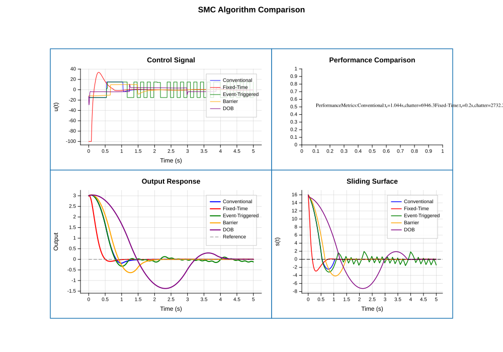
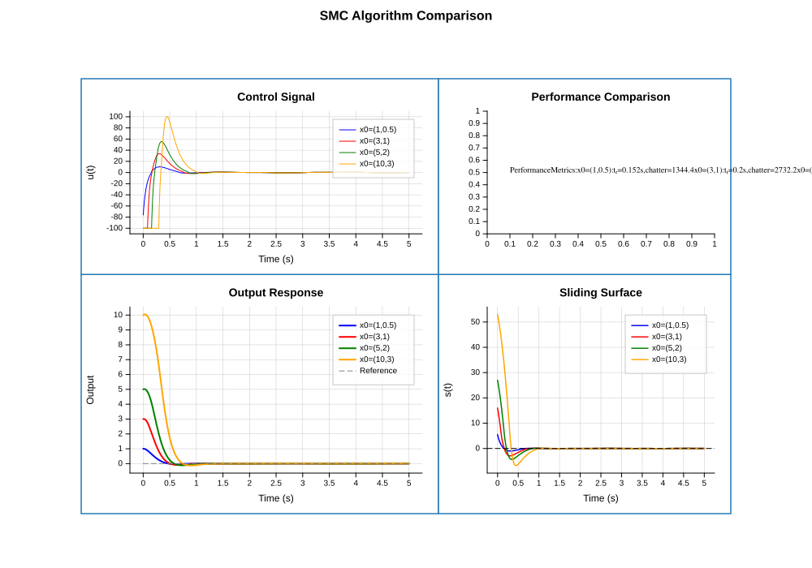
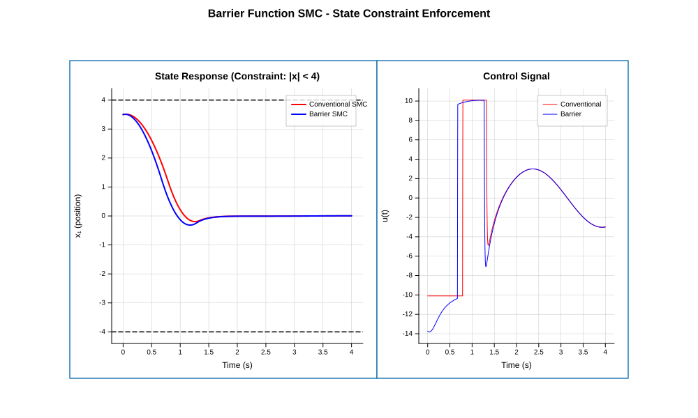
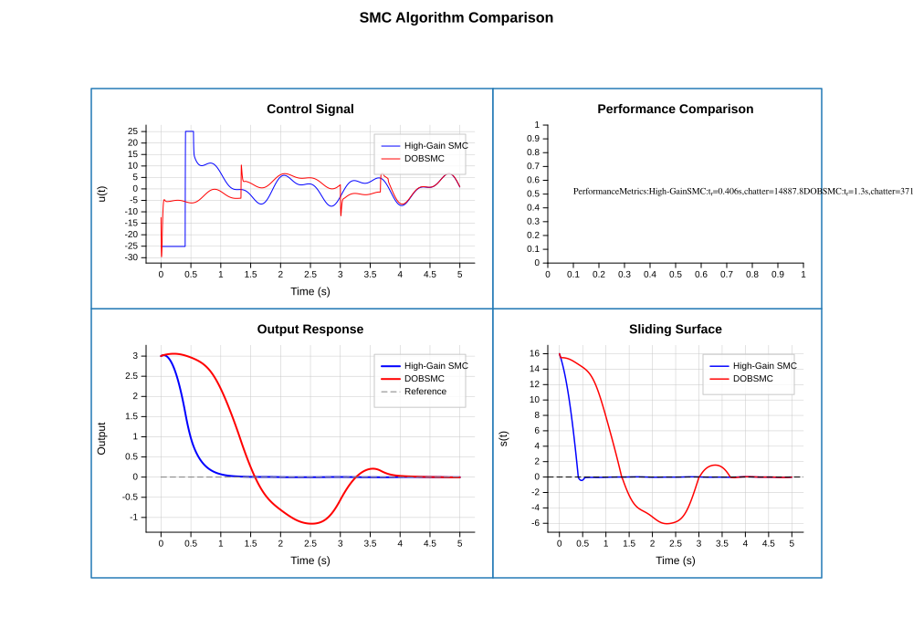
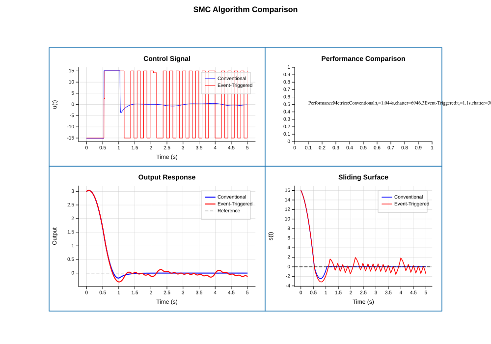

CppPlot - A Matplotlib-style Plotting Library for C++

🎯 Overview
CppPlot is a modern, header-only C++ plotting library inspired by Python’s matplotlib. It provides a simple, intuitive API for creating publication-quality visualizations directly from C++ code.
✨ Features
- 📊 Multiple Plot Types: Line plots, scatter plots, bar charts, histograms
- 📈 Scientific Features: Error bars, fill between, log scale, annotations
- 🎛️ Control Systems: Bode, Nyquist, Nichols, Pole-Zero, Root Locus, Step/Impulse Response
- 🔧 Controller Design: PID, Lead/Lag, LQR, LQG, MPC, Pole Placement
- 📡 State Estimation: Kalman Filter, Extended KF, Unscented KF
- ⚡ EE/Telecom Applications: PLL, Power Converters, Motor Drives, Channel Equalization
- 🎨 Rich Styling: Colors, line styles, markers, legends, grids
- 🚀 Advanced Nonlinear: Sliding Mode Control (SMC), Barrier Functions, Event-Triggered Control
- 📐 Subplots: Create complex multi-plot figures with GridSpec
- ✍️ LaTeX Support: Mathematical expressions with LaTeX rendering
- 💾 SVG Backend: Clean, scalable vector graphics output
- 🔧 Header-Only: Easy integration, just include and use
- 🚀 Modern C++14: Clean, efficient, compatible with older compilers
- 🖥️ Cross-Platform: Windows, Linux, macOS
📚 Educational Companion
While CppPlot is a standalone library, it was originally developed alongside and acts as the official computational engine for the textbook: Modern Control Engineering with C++ (including the Nonlinear and Adaptive Control expansion).
The textbook project contains comprehensive tutorials, theoretical proofs, and Jupyter-style C++ Notebook (cppnb) environments to interactively learn control systems using this library.
📦 Installation
Header-Only (Recommended)
Simply copy the include/cppplot folder to your project:
cp -r include/cppplot /your/project/include/CMake
add_subdirectory(cppplot)
target_link_libraries(your_target PRIVATE cppplot)CMake FetchContent
include(FetchContent)
FetchContent_Declare(
cppplot
GIT_REPOSITORY https://github.com/yourusername/cppplot.git
GIT_TAG v1.0.0
)
FetchContent_MakeAvailable(cppplot)
target_link_libraries(your_target PRIVATE cppplot)📚 API Reference
Table of Contents
- CppPlot API Reference
- Table of Contents
- Quick Start
- Pyplot Interface
- Figure Class
- Axes Class
- Color Class
- Style Classes
- Utility Functions
- Colormaps
- Themes
- Complete Example
- Control Systems Module
- Complete Control Systems Example
Quick Start
#include <cppplot/cppplot.hpp>
using namespace cppplot;
int main() {
std::vector<double> x = {1, 2, 3, 4, 5};
std::vector<double> y = {1, 4, 9, 16, 25};
plot(x, y, "b-o");
xlabel("X");
ylabel("Y");
title("Simple Plot");
savefig("plot.svg");
return 0;
}Control Systems Quick Start
#include <cppplot/control/control.hpp>
using namespace cppplot::control;
int main() {
// Create a transfer function: G(s) = 10 / (s² + 2s + 10)
TransferFunction G({10}, {1, 2, 10});
// Analyze stability
auto info = margin(G);
std::cout << "Gain Margin: " << info.Gm_dB << " dB\n";
std::cout << "Phase Margin: " << info.Pm << " deg\n";
// Plot Bode diagram
bode(G);
savefig("bode.svg");
// Step response
step(G);
savefig("step.svg");
return 0;
}Pyplot Interface
The pyplot interface provides global functions similar to matplotlib.pyplot.
Plotting Functions
plot(x, y, fmt, opts)
Create a line plot.
plot(x, y, "b-o"); // Blue line with circles
plot(x, y, "r--", {{"label", "data"}}); // Red dashed line with label
plot(y); // Plot y with x = 0,1,2,...Format string: - Colors: b (blue), g (green), r (red), c (cyan), m (magenta), y (yellow), k (black), w (white) - Line styles: - (solid), -- (dashed), -. (dash-dot), : (dotted) - Markers: o (circle), s (square), ^ (triangle), x, +, *, .
scatter(x, y, opts)
Create a scatter plot.
scatter(x, y);
scatter(x, y, {{"c", "red"}, {"s", 50.0}, {"alpha", 0.7}});Options: - c or color: Color name or hex - s: Marker size - alpha: Transparency (0-1) - marker: Marker type
bar(x, heights, opts)
Create a bar chart.
bar({1, 2, 3}, {10, 20, 15});
bar(categories, values, {{"color", "steelblue"}});hist(data, bins, opts)
Create a histogram.
hist(data, 20);
hist(data, 30, {{"color", "coral"}});errorbar(x, y, [xerr], yerr, opts)
Create an error bar plot. Supports y-only errors or both x and y errors.
errorbar(x, y, yerr);
errorbar(x, y, xerr, yerr, {{"color", "red"}, {"linewidth", 1.5}});fill_between(x, y1, [y2], opts)
Fill the area between two curves, or between a curve and a baseline.
// Fill between a curve and baseline 0.0
fill_between(x, y, 0.0, {{"color", "blue"}, {"alpha", 0.3}});
// Fill between two curves y1 and y2
fill_between(x, y1, y2, {{"color", "red"}, {"alpha", 0.5}});contour(x, y, z, levels, opts)
Create a contour plot from a 2D scalar field.
// z is a vector of vectors containing scalar values evaluated at grid x, y
contour(x, y, z, {0.1, 0.5, 1.0, 2.0}, {{"cmap", "viridis"}});Labels and Title
xlabel("X axis label");
ylabel("Y axis label");
title("Plot title");
suptitle("Figure title");Axis Configuration
xlim(0, 10); // Set x-axis limits
ylim(-1, 1); // Set y-axis limits
grid(true); // Show grid
legend(true); // Show legend
twinx(); // Overlay a secondary Y-axis
polar(true); // Enable Polar coordinate axesOutput
savefig("plot.svg"); // Save to file
show(); // Display (opens in browser)
clf(); // Clear current figureFigure Management
figure(800, 600); // Create new figure with size
gcf(); // Get current figure
gca(); // Get current axes
subplot(2, 2, 1); // Create subplotFigure Class
class Figure {
public:
Figure(int width = 800, int height = 600);
// Size
Figure& setSize(int width, int height);
int width() const;
int height() const;
// Subplots
Axes& add_subplot(int nrows, int ncols, int index);
Axes& subplot(int nrows, int ncols, int index); // Alias
Axes& add_axes(double x, double y, double width, double height);
// Current axes
Axes& gca();
void sca(Axes& ax);
// Title
Figure& suptitle(const std::string& title);
// Output
void savefig(const std::string& filename);
std::string toSVG();
void show();
// Clear
void clear();
};Example
Figure fig(1200, 400);
fig.suptitle("My Plots");
auto& ax1 = fig.subplot(1, 3, 1);
ax1.plot(x, y1, "b-");
ax1.set_title("Plot 1");
auto& ax2 = fig.subplot(1, 3, 2);
ax2.scatter(x, y2);
ax2.set_title("Plot 2");
auto& ax3 = fig.subplot(1, 3, 3);
ax3.bar(x, y3);
ax3.set_title("Plot 3");
fig.savefig("subplots.svg");Axes Class
class Axes {
public:
// Plotting
Axes& plot(const std::vector<double>& x,
const std::vector<double>& y,
const std::string& fmt = "-",
const PlotOptions& opts = {});
Axes& scatter(const std::vector<double>& x,
const std::vector<double>& y,
const PlotOptions& opts = {});
Axes& bar(const std::vector<double>& x,
const std::vector<double>& heights,
const PlotOptions& opts = {});
Axes& hist(const std::vector<double>& data,
int bins = 10,
const PlotOptions& opts = {});
Axes& errorbar(const std::vector<double>& x,
const std::vector<double>& y,
const std::vector<double>& yerr,
const PlotOptions& opts = {});
Axes& errorbar(const std::vector<double>& x,
const std::vector<double>& y,
const std::vector<double>& xerr,
const std::vector<double>& yerr,
const PlotOptions& opts = {});
Axes& fill_between(const std::vector<double>& x,
const std::vector<double>& y1,
const std::vector<double>& y2,
const PlotOptions& opts = {});
Axes& fill_between(const std::vector<double>& x,
const std::vector<double>& y,
double baseline = 0.0,
const PlotOptions& opts = {});
Axes& contour(const std::vector<double>& x,
const std::vector<double>& y,
const std::vector<std::vector<double>>& z,
const std::vector<double>& levels,
const PlotOptions& opts = {});
// Labels
Axes& set_xlabel(const std::string& label);
Axes& set_ylabel(const std::string& label);
Axes& set_title(const std::string& title);
Axes& set_xticklabels(const std::vector<std::string>& labels, const std::vector<double>& positions = {});
Axes& set_yticklabels(const std::vector<std::string>& labels, const std::vector<double>& positions = {});
// Limits
Axes& set_xlim(double min, double max);
Axes& set_ylim(double min, double max);
// Appearance
Axes& grid(bool show = true);
Axes& legend(bool show = true);
Axes& twinx();
Axes& polar(bool p = true);
Axes& setTheme(const std::string& name);
// Appearance
Axes& grid(bool show = true);
Axes& legend(bool show = true);
Axes& setTheme(const std::string& name);
// Clear
void clear();
};Color Class
class Color {
public:
// Constructors
Color();
Color(uint8_t r, uint8_t g, uint8_t b, uint8_t a = 255);
// Factory methods
static Color fromHex(const std::string& hex);
static Color fromName(const std::string& name);
static Color fromChar(char c);
static Color fromHSV(double h, double s, double v);
static Color fromNormalized(double r, double g, double b, double a = 1.0);
// Predefined colors
static Color red();
static Color green();
static Color blue();
static Color cyan();
static Color magenta();
static Color yellow();
static Color black();
static Color white();
static Color gray(uint8_t level = 128);
static Color transparent();
static Color tab10(int index); // Matplotlib default cycle
// Accessors
uint8_t r() const;
uint8_t g() const;
uint8_t b() const;
uint8_t a() const;
// Output formats
std::string toHex(bool includeAlpha = false) const;
std::string toRGB() const;
std::string toRGBA() const;
// Modifications
Color withAlpha(double alpha) const;
Color lighter(double factor = 0.2) const;
Color darker(double factor = 0.2) const;
};Named Colors
- Basic:
red,green,blue,cyan,magenta,yellow,black,white - Extended:
orange,purple,pink,brown,navy,teal,olive,maroon,lime,aqua,silver,gold - Web:
steelblue,coral,salmon,skyblue,violet,indigo,crimson - Gray shades:
gray,lightgray,darkgray
Style Classes
LineStyle
struct LineStyle {
std::string style = "-"; // "-", "--", "-.", ":", "none"
double width = 1.5;
Color color;
double alpha = 1.0;
};MarkerStyle
struct MarkerStyle {
std::string marker = "none"; // "o", "s", "^", "v", "x", "+", "*", "."
double size = 6.0;
Color faceColor;
Color edgeColor;
double edgeWidth = 1.0;
double alpha = 1.0;
};TextStyle
struct TextStyle {
std::string fontFamily = "Arial, sans-serif";
double fontSize = 12.0;
std::string fontWeight = "normal"; // "normal", "bold"
std::string fontStyle = "normal"; // "normal", "italic"
Color color;
TextAnchor anchor;
double rotation = 0.0;
};Utility Functions
Data Generation
// Linearly spaced values
std::vector<double> linspace(double start, double stop, size_t num = 50);
// Logarithmically spaced values
std::vector<double> logspace(double start, double stop, size_t num = 50);
// Values with fixed step
std::vector<double> arange(double start, double stop, double step = 1.0);
// Random uniform values
std::vector<double> random(size_t n, double min = 0.0, double max = 1.0);
// Random normal values
std::vector<double> randn(size_t n, double mean = 0.0, double stddev = 1.0);Example
auto x = linspace(0, 2 * M_PI, 100); // 100 points from 0 to 2π
auto noise = randn(100, 0, 0.1); // 100 random values, mean=0, std=0.1Colormaps
class Colormap {
public:
Color operator()(double value) const; // value in [0, 1]
static Colormap viridis();
static Colormap plasma();
static Colormap hot();
static Colormap cool();
static Colormap jet();
static Colormap grayscale();
static Colormap rainbow();
static Colormap get(const std::string& name);
};Example
Colormap cmap = Colormap::viridis();
for (int i = 0; i < 10; ++i) {
Color c = cmap(i / 9.0); // Get color for value
}Themes
class Theme {
public:
static Theme defaultTheme();
static Theme dark();
static Theme seaborn();
static Theme ggplot();
static Theme get(const std::string& name);
};Usage
Axes ax;
ax.setTheme("dark");
// or
ax.setTheme(Theme::seaborn());Complete Example
#include <cppplot/cppplot.hpp>
#include <cmath>
using namespace cppplot;
int main() {
// Generate data
auto x = linspace(0, 4 * M_PI, 200);
std::vector<double> y_sin, y_cos;
for (double xi : x) {
y_sin.push_back(std::sin(xi));
y_cos.push_back(std::cos(xi));
}
// Create figure with subplots
auto fig = figure(1000, 400);
fig.suptitle("Trigonometric Functions");
// Subplot 1: Sine
auto& ax1 = fig.subplot(1, 2, 1);
ax1.plot(x, y_sin, "b-", {{"label", std::string("sin(x)")}});
ax1.set_xlabel("x");
ax1.set_ylabel("y");
ax1.set_title("Sine Wave");
ax1.grid(true);
ax1.legend(true);
// Subplot 2: Cosine
auto& ax2 = fig.subplot(1, 2, 2);
ax2.plot(x, y_cos, "r-", {{"label", std::string("cos(x)")}});
ax2.set_xlabel("x");
ax2.set_ylabel("y");
ax2.set_title("Cosine Wave");
ax2.grid(true);
ax2.legend(true);
// Save
fig.savefig("trig_functions.svg");
return 0;
}Control Systems Module
The control systems module provides MATLAB-like functions for control system analysis and design.
Namespace: cppplot::control
Include: #include <cppplot/control/control.hpp>
Polynomial Class
Represents a polynomial with coefficients in descending order (MATLAB convention).
class Polynomial {
public:
// Constructors
Polynomial(); // Zero polynomial
Polynomial(const std::vector<double>& coeffs); // From coefficients [a_n, ..., a_1, a_0]
Polynomial(std::initializer_list<double> init); // {a_n, ..., a_0}
Polynomial(double constant); // Constant polynomial
// Properties
int degree() const; // Polynomial degree
double leading() const; // Leading coefficient (a_n)
double constant() const; // Constant term (a_0)
bool isZero() const; // Check if zero polynomial
bool isConstant() const; // Check if constant
// Evaluation
double eval(double x) const; // Evaluate at real x
std::complex<double> eval(std::complex<double> x) const; // Evaluate at complex x
// Roots
std::vector<std::complex<double>> roots() const; // Find all roots
// String representation
std::string toString() const;
};
// Operators: +, -, *, / (polynomial and scalar)
// Factory functions
Polynomial poly(const std::vector<std::complex<double>>& roots); // From complex roots
Polynomial poly(const std::vector<double>& roots); // From real rootsExample:
Polynomial p({1, -3, 2}); // p(s) = s² - 3s + 2
auto r = p.roots(); // r = {1, 2}
Polynomial q = poly({-1, -2}); // q(s) = (s+1)(s+2) = s² + 3s + 2More Examples:
// Example 1: Characteristic polynomial analysis
Polynomial char_poly({1, 6, 11, 6}); // s³ + 6s² + 11s + 6
auto roots = char_poly.roots(); // roots = {-1, -2, -3}
std::cout << "Polynomial: " << char_poly.toString() << "\n";
std::cout << "Degree: " << char_poly.degree() << "\n";
std::cout << "Roots:\n";
for (const auto& r : roots) {
std::cout << " " << r.real() << " + " << r.imag() << "j\n";
}
// Example 2: Polynomial arithmetic
Polynomial p1({1, 2}); // s + 2
Polynomial p2({1, 3}); // s + 3
Polynomial product = p1 * p2; // s² + 5s + 6
std::cout << "(" << p1.toString() << ") * (" << p2.toString() << ") = "
<< product.toString() << "\n";
// Example 3: Evaluate polynomial
Polynomial p({1, -2, 1}); // s² - 2s + 1 = (s-1)²
std::cout << "p(0) = " << p.eval(0) << "\n"; // 1
std::cout << "p(1) = " << p.eval(1) << "\n"; // 0
std::cout << "p(2) = " << p.eval(2) << "\n"; // 1
// Example 4: Create from roots
auto p_from_roots = poly({-1, -2, -3}); // (s+1)(s+2)(s+3)
std::cout << "From roots: " << p_from_roots.toString() << "\n";
// Output: s³ + 6s² + 11s + 6TransferFunction Class
Continuous-time transfer function G(s) = num(s)/den(s).
class TransferFunction {
public:
Polynomial num; // Numerator polynomial
Polynomial den; // Denominator polynomial
// Constructors
TransferFunction(); // G(s) = 1
TransferFunction(const Polynomial& n, const Polynomial& d); // From polynomials
TransferFunction(const std::vector<double>& n,
const std::vector<double>& d); // From coefficient vectors
TransferFunction(std::initializer_list<double> n,
std::initializer_list<double> d); // From initializer lists
TransferFunction(double gain); // Constant gain
// Properties
double dcgain() const; // DC gain G(0)
int order() const; // System order
int numPoles() const; // Number of poles
int numZeros() const; // Number of zeros
bool isProper() const; // degree(num) <= degree(den)
bool isStrictlyProper() const; // degree(num) < degree(den)
// Poles and zeros
std::vector<std::complex<double>> poles() const;
std::vector<std::complex<double>> zeros() const;
double gain() const; // Leading coefficient ratio
// Frequency response
std::complex<double> eval(std::complex<double> s) const; // Evaluate at s
std::complex<double> freqresp(double omega) const; // Response at s = jω
double mag(double omega) const; // |G(jω)|
double mag_dB(double omega) const; // 20*log10|G(jω)|
double phase(double omega) const; // Phase in radians
double phase_deg(double omega) const; // Phase in degrees
// Stability
bool isStable() const; // All poles in LHP
bool isMarginallyStable() const; // Check marginal stability
// String representation
std::string toString() const;
};
// Operators: *, +, -, / for series, parallel, etc.Factory Functions:
// From zeros, poles, gain
TransferFunction zpk(const std::vector<std::complex<double>>& zeros,
const std::vector<std::complex<double>>& poles,
double gain);
TransferFunction zpk(const std::vector<double>& zeros,
const std::vector<double>& poles,
double gain);
// Standard forms
TransferFunction integrator(); // G(s) = 1/s
TransferFunction differentiator(); // G(s) = s
TransferFunction first_order(double K, double tau); // G(s) = K/(τs+1)
TransferFunction second_order(double K, double wn, double zeta); // G(s) = Kωn²/(s²+2ζωns+ωn²)
// Connections
TransferFunction feedback(const TransferFunction& G,
const TransferFunction& H = TransferFunction(1),
int sign = -1); // G/(1+GH) or G/(1-GH)
TransferFunction series(const TransferFunction& G1, const TransferFunction& G2);
TransferFunction parallel(const TransferFunction& G1, const TransferFunction& G2);Example:
// Create transfer function: G(s) = 10 / (s² + 2s + 10)
TransferFunction G({10}, {1, 2, 10});
std::cout << G << std::endl;
// From zeros, poles, gain
auto G2 = zpk({-1}, {-2, -3}, 5.0); // G(s) = 5(s+1)/((s+2)(s+3))
// Second-order system with ωn=5, ζ=0.7
auto G3 = second_order(1.0, 5.0, 0.7);
// Feedback connection
TransferFunction K(10);
auto Gcl = feedback(G, K); // Closed-loop: G/(1+10G)More Examples:
// ============================================================
// Example 1: System Analysis
// ============================================================
TransferFunction G({100}, {1, 12, 20, 0}); // G(s) = 100/(s³ + 12s² + 20s)
std::cout << "=== System Properties ===\n";
std::cout << "Transfer Function: " << G << "\n";
std::cout << "Order: " << G.order() << "\n";
std::cout << "DC Gain: " << G.dcgain() << "\n";
std::cout << "Proper: " << G.isProper() << "\n";
std::cout << "Stable: " << G.isStable() << "\n";
// Poles and zeros
std::cout << "\nPoles:\n";
for (const auto& p : G.poles()) {
std::cout << " s = " << p.real() << " + " << p.imag() << "j\n";
}
std::cout << "\nZeros:\n";
for (const auto& z : G.zeros()) {
std::cout << " s = " << z.real() << " + " << z.imag() << "j\n";
}
// ============================================================
// Example 2: Frequency Response Calculation
// ============================================================
TransferFunction H({10}, {1, 2, 10}); // Second-order system
// Calculate at specific frequencies
std::vector<double> frequencies = {0.1, 1.0, 3.16, 10.0, 100.0};
std::cout << "\n=== Frequency Response ===\n";
std::cout << "ω (rad/s) | Mag (dB) | Phase (deg)\n";
std::cout << "----------------------------------------\n";
for (double w : frequencies) {
printf("%8.2f | %8.2f | %8.2f\n",
w, H.mag_dB(w), H.phase_deg(w));
}
// ============================================================
// Example 3: Common Control System Blocks
// ============================================================
// Integrator: G(s) = 1/s
auto int_block = integrator();
// First-order lag: G(s) = 5/(2s + 1), K=5, τ=2
auto lag = first_order(5.0, 2.0);
// Second-order system: ωn=10 rad/s, ζ=0.5
auto G2nd = second_order(1.0, 10.0, 0.5);
// Lead compensator: (s + 2)/(s + 10)
TransferFunction lead({1, 2}, {1, 10});
// PID controller: Kp=10, Ki=5, Kd=2
// C(s) = Kp + Ki/s + Kd*s = (Kd*s² + Kp*s + Ki)/s
TransferFunction PID({2, 10, 5}, {1, 0}); // (2s² + 10s + 5)/s
// ============================================================
// Example 4: System Connections
// ============================================================
TransferFunction Plant({1}, {1, 1, 0}); // G(s) = 1/(s² + s)
TransferFunction Controller({10, 5}, {1}); // C(s) = 10s + 5
// Series connection: L(s) = C(s) * G(s)
auto L = series(Controller, Plant);
// or: auto L = Controller * Plant;
// Parallel connection
auto sum = parallel(Plant, Controller);
// or: auto sum = Plant + Controller;
// Unity feedback: Gcl = G/(1+G)
auto Gcl_unity = feedback(Plant);
// Feedback with sensor: Gcl = G/(1+GH)
TransferFunction Sensor({1}, {0.1, 1}); // H(s) = 1/(0.1s + 1)
auto Gcl = feedback(Plant, Sensor);
// Positive feedback: G/(1-GH)
auto Gcl_pos = feedback(Plant, Sensor, 1);
std::cout << "Open-loop L(s) = " << L << "\n";
std::cout << "Closed-loop Gcl(s) = " << Gcl << "\n";
// ============================================================
// Example 5: Stability Check
// ============================================================
std::vector<TransferFunction> systems = {
TransferFunction({1}, {1, 3, 2}), // Stable: poles at -1, -2
TransferFunction({1}, {1, 0, 1}), // Marginally stable: poles at ±j
TransferFunction({1}, {1, -2, 1}), // Unstable: poles at 1, 1
};
std::cout << "\n=== Stability Analysis ===\n";
for (size_t i = 0; i < systems.size(); ++i) {
std::cout << "System " << (i+1) << ": " << systems[i] << "\n";
std::cout << " Stable: " << (systems[i].isStable() ? "Yes" : "No") << "\n";
std::cout << " Marginally Stable: " << (systems[i].isMarginallyStable() ? "Yes" : "No") << "\n\n";
}Matrix Class
Simple matrix class for state-space operations.
class Matrix {
public:
size_t rows, cols;
// Constructors
Matrix(); // Empty matrix
Matrix(size_t r, size_t c, double val = 0.0); // r×c matrix with initial value
Matrix(std::initializer_list<std::initializer_list<double>> init); // From 2D list
Matrix(const std::vector<double>& v); // Column vector
// Static constructors
static Matrix eye(size_t n); // n×n identity
static Matrix zeros(size_t r, size_t c); // r×c zeros
// Element access
double& operator()(size_t i, size_t j);
double operator()(size_t i, size_t j) const;
// Operations
Matrix T() const; // Transpose
double trace() const; // Trace
double det() const; // Determinant
Matrix inv() const; // Inverse
// Accessors
std::vector<double> col(size_t j) const;
std::vector<double> row(size_t i) const;
std::string toString() const;
};
// Operators: +, -, * (matrix and scalar)Example:
Matrix A = {{0, 1}, {-2, -3}};
Matrix B = {{0}, {1}};
Matrix AT = A.T(); // Transpose
double d = A.det(); // Determinant
Matrix Ainv = A.inv(); // Inverse
Matrix I = Matrix::eye(2); // 2×2 identityMore Examples:
// ============================================================
// Example 1: Matrix Creation and Basic Operations
// ============================================================
// Create matrices
Matrix A = {{1, 2, 3},
{4, 5, 6},
{7, 8, 10}};
Matrix B = {{1, 0, 0},
{0, 1, 0},
{0, 0, 1}};
// Element access
std::cout << "A(0,0) = " << A(0, 0) << "\n"; // 1
std::cout << "A(1,2) = " << A(1, 2) << "\n"; // 6
// Transpose
Matrix AT = A.T();
std::cout << "A^T = \n" << AT.toString() << "\n";
// Matrix arithmetic
Matrix C = A + B; // Addition
Matrix D = A - B; // Subtraction
Matrix E = A * B; // Multiplication
Matrix F = A * 2.0; // Scalar multiplication
// ============================================================
// Example 2: Matrix Properties
// ============================================================
Matrix M = {{4, 7}, {2, 6}};
std::cout << "Matrix M:\n" << M.toString() << "\n";
std::cout << "Determinant: " << M.det() << "\n"; // 4*6 - 7*2 = 10
std::cout << "Trace: " << M.trace() << "\n"; // 4 + 6 = 10
// Inverse
Matrix M_inv = M.inv();
std::cout << "M^(-1):\n" << M_inv.toString() << "\n";
// Verify: M * M^(-1) = I
Matrix should_be_I = M * M_inv;
std::cout << "M * M^(-1) = \n" << should_be_I.toString() << "\n";
// ============================================================
// Example 3: State-Space System Matrices
// ============================================================
// Mass-spring-damper: m*x'' + c*x' + k*x = F
// State: [x, x']^T, Input: F/m
// Parameters: m=1, c=2, k=5
double m = 1, c = 2, k = 5;
Matrix A_sys = {{0, 1}, {-k/m, -c/m}}; // [[0, 1], [-5, -2]]
Matrix B_sys = {{0}, {1/m}}; // [[0], [1]]
Matrix C_sys = {{1, 0}}; // Output: position
Matrix D_sys = {{0}};
std::cout << "System matrix A:\n" << A_sys.toString() << "\n";
std::cout << "Input matrix B:\n" << B_sys.toString() << "\n";
// Get rows and columns
auto row0 = A_sys.row(0); // First row
auto col1 = A_sys.col(1); // Second columnStateSpace Class
State-space representation: ẋ = Ax + Bu, y = Cx + Du
class StateSpace {
public:
Matrix A, B, C, D;
size_t n_states, n_inputs, n_outputs;
// Constructors
StateSpace();
StateSpace(const Matrix& A, const Matrix& B,
const Matrix& C, const Matrix& D);
StateSpace(const Matrix& A, const Matrix& B,
const Matrix& C, double d = 0); // Scalar D for SISO
// Properties
size_t order() const; // Number of states
bool isSISO() const; // Single-input single-output
std::vector<std::complex<double>> poles() const; // Eigenvalues of A
Polynomial char_poly() const; // Characteristic polynomial
bool isStable() const; // All eigenvalues in LHP
// Controllability
Matrix ctrb() const; // Controllability matrix [B, AB, A²B, ...]
bool isControllable() const;
// Observability
Matrix obsv() const; // Observability matrix [C; CA; CA²; ...]
bool isObservable() const;
std::string toString() const;
};
// Conversions
StateSpace tf2ss(const TransferFunction& G); // TF to state-space
TransferFunction ss2tf(const StateSpace& sys); // State-space to TF
// Simulation
std::pair<std::vector<double>, std::vector<std::vector<double>>>
lsim(const StateSpace& sys,
const std::vector<double>& t,
const std::vector<std::vector<double>>& u,
const std::vector<double>& x0 = {});
std::pair<std::vector<double>, std::vector<double>>
ss_step(const StateSpace& sys, double T = 10.0, int N = 500);
std::pair<std::vector<double>, std::vector<double>>
initial(const StateSpace& sys, const std::vector<double>& x0,
double T = 10.0, int N = 500);
// Display
void print_ss_info(const StateSpace& sys);Example:
// DC Motor model
Matrix A = {{0, 1}, {0, -10}};
Matrix B = {{0}, {1}};
Matrix C = {{1, 0}};
double D = 0;
StateSpace motor(A, B, C, D);
std::cout << motor << std::endl;
// Check properties
std::cout << "Controllable: " << motor.isControllable() << "\n";
std::cout << "Observable: " << motor.isObservable() << "\n";
std::cout << "Stable: " << motor.isStable() << "\n";
// Convert to transfer function
TransferFunction G = ss2tf(motor);
// Step response
auto [t, y] = ss_step(motor, 5.0, 200);More Examples:
// ============================================================
// Example 1: Complete State-Space Modeling
// ============================================================
// RLC Circuit: L*i' + R*i + (1/C)*∫i dt = V
// States: x1 = q (charge), x2 = i (current)
// Input: V (voltage)
// Output: Vc = q/C (capacitor voltage)
double R = 100; // Ohms
double L = 0.5; // Henry
double C = 1e-6; // Farad
Matrix A = {{0, 1}, {-1/(L*C), -R/L}};
Matrix B = {{0}, {1/L}};
Matrix C_mat = {{1/C, 0}};
double D = 0;
StateSpace rlc(A, B, C_mat, D);
std::cout << "=== RLC Circuit State-Space Model ===\n";
std::cout << rlc << "\n";
// System properties
std::cout << "Order: " << rlc.order() << "\n";
std::cout << "SISO: " << rlc.isSISO() << "\n";
std::cout << "Stable: " << rlc.isStable() << "\n";
// Poles (eigenvalues of A)
std::cout << "\nPoles:\n";
for (const auto& p : rlc.poles()) {
std::cout << " λ = " << p.real() << " + " << p.imag() << "j\n";
}
// ============================================================
// Example 2: Controllability and Observability
// ============================================================
// Uncontrollable system example
Matrix A_unc = {{-1, 0}, {0, -2}}; // Diagonal (decoupled)
Matrix B_unc = {{1}, {0}}; // Only affects first state
StateSpace sys_unc(A_unc, B_unc, Matrix({{1, 1}}), 0);
std::cout << "\n=== Controllability Analysis ===\n";
std::cout << "Controllability matrix:\n" << sys_unc.ctrb().toString() << "\n";
std::cout << "Controllable: " << sys_unc.isControllable() << "\n";
// Observable but uncontrollable
Matrix C_obs = {{0, 1}}; // Only observes second state
StateSpace sys_obs(A_unc, B_unc, C_obs, 0);
std::cout << "\nObservability matrix:\n" << sys_obs.obsv().toString() << "\n";
std::cout << "Observable: " << sys_obs.isObservable() << "\n";
// ============================================================
// Example 3: Conversion Between Representations
// ============================================================
// Transfer function: G(s) = 10/(s² + 3s + 2)
TransferFunction G_tf({10}, {1, 3, 2});
// Convert to state-space (controllable canonical form)
StateSpace sys_ss = tf2ss(G_tf);
std::cout << "\n=== TF to State-Space ===\n";
std::cout << "G(s) = " << G_tf << "\n";
std::cout << "State-Space:\n" << sys_ss << "\n";
// Convert back to transfer function
TransferFunction G_back = ss2tf(sys_ss);
std::cout << "Back to TF: " << G_back << "\n";
// ============================================================
// Example 4: State-Space Simulation
// ============================================================
// Simple first-order system: x' = -x + u, y = x
Matrix A_sim = {{-1}};
Matrix B_sim = {{1}};
Matrix C_sim = {{1}};
StateSpace sys_sim(A_sim, B_sim, C_sim, 0);
// Step response
auto [t_step, y_step] = ss_step(sys_sim, 5.0, 100);
std::cout << "\n=== Step Response (first 10 points) ===\n";
for (int i = 0; i < 10; ++i) {
printf("t = %.2f, y = %.4f\n", t_step[i], y_step[i]);
}
// Initial condition response: x(0) = 2
auto [t_init, y_init] = initial(sys_sim, {2.0}, 5.0, 100);
std::cout << "\n=== Initial Condition Response ===\n";
std::cout << "x(0) = 2.0\n";
for (int i = 0; i < 10; ++i) {
printf("t = %.2f, y = %.4f\n", t_init[i], y_init[i]);
}
// ============================================================
// Example 5: Multi-Input Multi-Output (MIMO) System
// ============================================================
// Two-tank system with two inputs (inflows) and two outputs (levels)
Matrix A_mimo = {{-0.5, 0.3}, {0.3, -0.5}};
Matrix B_mimo = {{1, 0}, {0, 1}};
Matrix C_mimo = {{1, 0}, {0, 1}};
Matrix D_mimo = {{0, 0}, {0, 0}};
StateSpace mimo_sys(A_mimo, B_mimo, C_mimo, D_mimo);
std::cout << "\n=== MIMO System (Two Tanks) ===\n";
std::cout << "States: 2, Inputs: " << mimo_sys.n_inputs
<< ", Outputs: " << mimo_sys.n_outputs << "\n";
std::cout << "SISO: " << mimo_sys.isSISO() << "\n";
std::cout << "Controllable: " << mimo_sys.isControllable() << "\n";
std::cout << "Observable: " << mimo_sys.isObservable() << "\n";Analysis Functions
// Structs
struct MarginInfo {
double Gm; // Gain margin (linear)
double Gm_dB; // Gain margin (dB)
double Pm; // Phase margin (degrees)
double Wgc; // Gain crossover frequency (rad/s)
double Wpc; // Phase crossover frequency (rad/s)
bool stable; // Closed-loop stability prediction
};
struct StepInfo {
double RiseTime; // 10% to 90% rise time
double SettlingTime; // 2% settling time
double Overshoot; // Peak overshoot (%)
double Peak; // Peak value
double PeakTime; // Time of peak
double SteadyState; // Final value
double Undershoot; // Maximum undershoot (%)
};
struct PoleInfo {
std::complex<double> value;
double damping; // Damping ratio ζ
double naturalFreq; // Natural frequency ωn
double timeConstant; // Time constant τ
};
// Functions
MarginInfo margin(const TransferFunction& G);
StepInfo stepinfo(const TransferFunction& G, double t_final = 0);
double bandwidth(const TransferFunction& G); // -3dB bandwidth
bool isstable(const TransferFunction& G);
std::vector<std::complex<double>> pole(const TransferFunction& G);
std::vector<std::complex<double>> zero(const TransferFunction& G);
double dcgain(const TransferFunction& G);
std::vector<PoleInfo> poleinfo(const TransferFunction& G);
// Inverse Laplace (Rational, Simple Poles)
// Evaluate exact time responses when poles are simple and G(s) is proper
double inverse_laplace_impulse(const TransferFunction& G, double t); // g(t) for t >= 0
double inverse_laplace_step(const TransferFunction& G, double t); // y_step(t) = L^{-1}{G(s)/s}Example:
TransferFunction G({10}, {1, 2, 10});
// Stability margins
auto m = margin(G);
std::cout << "Gain Margin: " << m.Gm_dB << " dB\n";
std::cout << "Phase Margin: " << m.Pm << " deg\n";
// Step response characteristics
auto info = stepinfo(G);
std::cout << "Rise Time: " << info.RiseTime << " s\n";
std::cout << "Overshoot: " << info.Overshoot << " %\n";
std::cout << "Settling Time: " << info.SettlingTime << " s\n";
// Bandwidth
std::cout << "Bandwidth: " << bandwidth(G) << " rad/s\n";
// Exact impulse/step via inverse Laplace (if applicable)
double g1 = inverse_laplace_impulse(G, 0.1); // returns NaN if not applicable
double y1 = inverse_laplace_step(G, 0.1);More Examples:
// ============================================================
// Example 1: Complete System Analysis Report
// ============================================================
TransferFunction G({100}, {1, 15, 50, 0}); // G(s) = 100/(s³ + 15s² + 50s)
std::cout << "╔══════════════════════════════════════════╗\n";
std::cout << "║ CONTROL SYSTEM ANALYSIS REPORT ║\n";
std::cout << "╚══════════════════════════════════════════╝\n\n";
std::cout << "Transfer Function: " << G << "\n\n";
// 1. Stability Analysis
std::cout << "=== STABILITY ANALYSIS ===\n";
std::cout << "Open-loop stable: " << (G.isStable() ? "Yes" : "No") << "\n";
auto poles_vec = pole(G);
std::cout << "Poles:\n";
for (const auto& p : poles_vec) {
std::cout << " s = " << p.real();
if (std::abs(p.imag()) > 1e-10) {
std::cout << " ± " << std::abs(p.imag()) << "j";
}
std::cout << "\n";
}
// 2. Stability Margins
std::cout << "\n=== STABILITY MARGINS ===\n";
auto margins = margin(G);
std::cout << "Gain Margin: " << margins.Gm_dB << " dB";
std::cout << " (at ω = " << margins.Wpc << " rad/s)\n";
std::cout << "Phase Margin: " << margins.Pm << " deg";
std::cout << " (at ω = " << margins.Wgc << " rad/s)\n";
std::cout << "Closed-loop stable: " << (margins.stable ? "Yes" : "No") << "\n";
// 3. Time Domain Performance
std::cout << "\n=== TIME DOMAIN PERFORMANCE ===\n";
auto Gcl = feedback(G); // Unity feedback
auto step_info = stepinfo(Gcl);
std::cout << "Rise Time (10-90%): " << step_info.RiseTime << " s\n";
std::cout << "Peak Time: " << step_info.PeakTime << " s\n";
std::cout << "Peak Value: " << step_info.Peak << "\n";
std::cout << "Overshoot: " << step_info.Overshoot << " %\n";
std::cout << "Settling Time (2%): " << step_info.SettlingTime << " s\n";
std::cout << "Steady-State Value: " << step_info.SteadyState << "\n";
// 4. Frequency Domain
std::cout << "\n=== FREQUENCY DOMAIN ===\n";
std::cout << "Bandwidth: " << bandwidth(Gcl) << " rad/s\n";
std::cout << "DC Gain: " << dcgain(Gcl) << "\n";
// ============================================================
// Example 2: Comparing Different Damping Ratios
// ============================================================
std::cout << "\n=== DAMPING RATIO COMPARISON ===\n";
std::cout << "Second-order systems with ωn = 10 rad/s\n\n";
std::vector<double> zetas = {0.1, 0.3, 0.5, 0.707, 1.0, 2.0};
std::cout << "ζ | %OS | Ts (2%) | Tr | BW\n";
std::cout << "---------|----------|----------|----------|----------\n";
for (double zeta : zetas) {
auto G_2nd = second_order(1.0, 10.0, zeta);
auto info = stepinfo(G_2nd);
double bw = bandwidth(G_2nd);
printf("%.3f | %6.2f%% | %6.3fs | %6.3fs | %6.2f rad/s\n",
zeta, info.Overshoot, info.SettlingTime, info.RiseTime, bw);
}
// ============================================================
// Example 3: Pole Information Analysis
// ============================================================
TransferFunction G_complex({25}, {1, 4, 25}); // Underdamped system
std::cout << "\n=== POLE CHARACTERISTICS ===\n";
auto pole_info = poleinfo(G_complex);
for (size_t i = 0; i < pole_info.size(); ++i) {
std::cout << "Pole " << (i+1) << ":\n";
std::cout << " Value: " << pole_info[i].value.real()
<< " + " << pole_info[i].value.imag() << "j\n";
std::cout << " Damping ratio (ζ): " << pole_info[i].damping << "\n";
std::cout << " Natural frequency (ωn): " << pole_info[i].naturalFreq << " rad/s\n";
std::cout << " Time constant (τ): " << pole_info[i].timeConstant << " s\n\n";
}
// ============================================================
// Example 4: Design Specifications Verification
// ============================================================
// Design specs: PM > 45°, ts < 1s, %OS < 20%
std::cout << "\n=== DESIGN VERIFICATION ===\n";
std::cout << "Specifications:\n";
std::cout << " - Phase Margin > 45°\n";
std::cout << " - Settling Time < 1 s\n";
std::cout << " - Overshoot < 20%\n\n";
TransferFunction Plant({10}, {1, 2, 0});
TransferFunction Controller({5, 10}, {1, 20});
auto L = Plant * Controller; // Open-loop
auto T = feedback(L); // Closed-loop
auto m_design = margin(L);
auto s_design = stepinfo(T);
std::cout << "Results:\n";
std::cout << " PM = " << m_design.Pm << "° ";
std::cout << (m_design.Pm > 45 ? "✓" : "✗") << "\n";
std::cout << " Ts = " << s_design.SettlingTime << " s ";
std::cout << (s_design.SettlingTime < 1 ? "✓" : "✗") << "\n";
std::cout << " %OS = " << s_design.Overshoot << "% ";
std::cout << (s_design.Overshoot < 20 ? "✓" : "✗") << "\n";Controller Design
Pole Placement
// Ackermann's formula for pole placement
// Find K such that eig(A - BK) = desired_poles
std::vector<double> acker(const Matrix& A, const Matrix& B,
const std::vector<std::complex<double>>& poles);
// Convenience wrappers
std::vector<double> place(const Matrix& A, const Matrix& B,
const std::vector<double>& real_poles);
std::vector<double> place_complex(const Matrix& A, const Matrix& B,
const std::vector<std::complex<double>>& poles);Example:
Matrix A = {{0, 1}, {-2, -3}};
Matrix B = {{0}, {1}};
// Place poles at -5±5j
std::vector<std::complex<double>> desired = {
{-5, 5}, {-5, -5}
};
auto K = acker(A, B, desired);
std::cout << "K = [" << K[0] << ", " << K[1] << "]\n";More Pole Placement Examples:
// ============================================================
// Example 1: Designing for Specific Time Response
// ============================================================
// Specification: Settling time ts ≈ 1s, Overshoot < 5%
// For 2nd order: ts ≈ 4/(ζωn), %OS ≈ exp(-πζ/√(1-ζ²))×100
// For %OS < 5%: ζ > 0.69
// For ts < 1s: ζωn > 4 → if ζ = 0.7, ωn > 5.7
double zeta = 0.707; // Damping ratio
double wn = 6.0; // Natural frequency
// Desired poles: s = -ζωn ± jωn√(1-ζ²)
double sigma = zeta * wn;
double wd = wn * std::sqrt(1 - zeta * zeta);
std::vector<std::complex<double>> spec_poles = {
{-sigma, wd},
{-sigma, -wd}
};
Matrix A_plant = {{0, 1}, {0, -5}}; // Plant with pole at 0 and -5
Matrix B_plant = {{0}, {10}};
auto K_spec = acker(A_plant, B_plant, spec_poles);
std::cout << "Design for ζ=" << zeta << ", ωn=" << wn << ":\n";
std::cout << " Desired poles: " << -sigma << " ± " << wd << "j\n";
std::cout << " K = [" << K_spec[0] << ", " << K_spec[1] << "]\n";
// Verify closed-loop poles
Matrix A_cl = A_plant;
for (size_t i = 0; i < 2; ++i) {
A_cl(1, i) -= B_plant(1, 0) * K_spec[i];
}
std::cout << " Closed-loop A:\n" << A_cl.toString() << "\n";
// ============================================================
// Example 2: Third-Order System
// ============================================================
Matrix A3 = {{0, 1, 0}, {0, 0, 1}, {-6, -11, -6}};
Matrix B3 = {{0}, {0}, {1}};
// Place all poles at -10 (fast response)
std::vector<double> fast_poles = {-10, -10, -10};
auto K3 = place(A3, B3, fast_poles);
std::cout << "\n3rd Order System:\n";
std::cout << " Poles placed at: s = -10 (triple)\n";
std::cout << " K = [" << K3[0] << ", " << K3[1] << ", " << K3[2] << "]\n";
// ============================================================
// Example 3: Dominant Pole Design
// ============================================================
// For higher-order systems, make some poles dominant
// Dominant poles: -2 ± 2j (slower, determine response)
// Non-dominant: -20 (fast, negligible effect)
std::vector<std::complex<double>> dom_poles = {
{-2, 2}, {-2, -2}, {-20, 0}
};
auto K_dom = acker(A3, B3, dom_poles);
std::cout << "\nDominant Pole Design:\n";
std::cout << " Dominant: -2 ± 2j\n";
std::cout << " Non-dominant: -20\n";
std::cout << " K = [" << K_dom[0] << ", " << K_dom[1] << ", " << K_dom[2] << "]\n";LQR Design
// Solve continuous-time Algebraic Riccati Equation (ARE)
// A'P + PA - PBR⁻¹B'P + Q = 0
Matrix care(const Matrix& A, const Matrix& B,
const Matrix& Q, const Matrix& R,
int max_iter = 500, double tol = 1e-9);
// LQR controller: minimize J = ∫(x'Qx + u'Ru)dt
// Returns K such that u = -Kx
std::vector<double> lqr(const Matrix& A, const Matrix& B,
const Matrix& Q, const Matrix& R);
// Simplified LQR with diagonal Q
std::vector<double> lqr_simple(const Matrix& A, const Matrix& B,
const std::vector<double>& q_diag,
double r);Example:
Matrix A = {{0, 1}, {-2, -0.5}};
Matrix B = {{0}, {1}};
Matrix Q = {{10, 0}, {0, 1}};
Matrix R = {{0.1}};
auto K = lqr(A, B, Q, R);
std::cout << "LQR gains K = [" << K[0] << ", " << K[1] << "]\n";More LQR Examples:
// ============================================================
// Example 1: Inverted Pendulum LQR
// ============================================================
// States: [cart_pos, cart_vel, pend_angle, pend_vel]
// Linear model around upright position
double M = 1.0; // Cart mass (kg)
double m = 0.1; // Pendulum mass (kg)
double l = 0.5; // Pendulum length (m)
double g = 9.81; // Gravity (m/s²)
double p = M + m;
Matrix A_pend = {
{0, 1, 0, 0},
{0, 0, -m*g/p, 0},
{0, 0, 0, 1},
{0, 0, g*(M+m)/(p*l), 0}
};
Matrix B_pend = {
{0},
{1/p},
{0},
{-1/(p*l)}
};
// LQR weights:
// - Penalize position error heavily (Q11)
// - Moderate penalty on angle (Q33)
// - Low penalty on velocities
Matrix Q_pend = {
{100, 0, 0, 0},
{0, 1, 0, 0},
{0, 0, 100, 0},
{0, 0, 0, 1}
};
Matrix R_pend = {{1}}; // Control effort penalty
auto K_pend = lqr(A_pend, B_pend, Q_pend, R_pend);
std::cout << "=== Inverted Pendulum LQR ===\n";
std::cout << "K = [";
for (size_t i = 0; i < K_pend.size(); ++i) {
std::cout << K_pend[i];
if (i < K_pend.size() - 1) std::cout << ", ";
}
std::cout << "]\n";
std::cout << " K_pos = " << K_pend[0] << " (position gain)\n";
std::cout << " K_vel = " << K_pend[1] << " (velocity gain)\n";
std::cout << " K_ang = " << K_pend[2] << " (angle gain)\n";
std::cout << " K_angvel = " << K_pend[3] << " (angular velocity gain)\n";
// ============================================================
// Example 2: Comparing Different Q/R Weightings
// ============================================================
Matrix A_lqr = {{0, 1}, {-2, -1}};
Matrix B_lqr = {{0}, {1}};
std::cout << "\n=== LQR Weight Comparison ===\n";
std::cout << "System: A = [0,1; -2,-1], B = [0; 1]\n\n";
// Different Q/R ratios
std::vector<std::pair<double, double>> qr_pairs = {
{1.0, 1.0}, // Balanced
{100.0, 1.0}, // Aggressive state tracking
{1.0, 100.0}, // Conservative control
{10.0, 0.1}, // Very aggressive
};
std::cout << "Q(1,1) R K1 K2 Comment\n";
std::cout << "------ ------ ------- ------- ---------------\n";
for (auto& [q11, r] : qr_pairs) {
Matrix Q_test = {{q11, 0}, {0, 1}};
Matrix R_test = {{r}};
auto K_test = lqr(A_lqr, B_lqr, Q_test, R_test);
std::string comment;
if (q11/r > 10) comment = "Fast, high effort";
else if (q11/r < 0.1) comment = "Slow, low effort";
else comment = "Balanced";
printf("%.1f %.1f %7.3f %7.3f %s\n",
q11, r, K_test[0], K_test[1], comment.c_str());
}
// ============================================================
// Example 3: LQR with Integral Action (LQI)
// ============================================================
// Augment state with integral of error for zero steady-state error
std::cout << "\n=== LQR with Integral Action ===\n";
// Original system: x' = Ax + Bu
Matrix A_orig = {{-2}};
Matrix B_orig = {{1}};
// Augmented system: [x'; e']' = [A, 0; -C, 0][x; e]' + [B; 0]u + [0; 1]r
// Where e = integral of (r - y)
Matrix A_aug = {{-2, 0}, {-1, 0}}; // C = [1]
Matrix B_aug = {{1}, {0}};
Matrix Q_aug = {{10, 0}, {0, 100}}; // High penalty on integral state
Matrix R_aug = {{1}};
auto K_lqi = lqr(A_aug, B_aug, Q_aug, R_aug);
std::cout << "LQI gains: K_state = " << K_lqi[0] << ", K_integral = " << K_lqi[1] << "\n";Observer Design
// Luenberger observer gain
// Find L such that eig(A - LC) = desired_poles
std::vector<double> observer_gain(const Matrix& A, const Matrix& C,
const std::vector<std::complex<double>>& poles);
std::vector<double> observer_gain(const Matrix& A, const Matrix& C,
const std::vector<double>& real_poles);Example:
// ============================================================
// Full State Observer Design
// ============================================================
// Rule of thumb: Observer poles 2-5x faster than controller poles
Matrix A_sys = {{0, 1}, {-2, -3}};
Matrix C_sys = {{1, 0}}; // Only position is measured
// Controller poles at -5 ± 5j
// Observer poles at -20, -25 (4-5x faster)
std::vector<double> obs_poles = {-20, -25};
auto L = observer_gain(A_sys, C_sys, obs_poles);
std::cout << "=== Observer Design ===\n";
std::cout << "Controller poles: -5 ± 5j\n";
std::cout << "Observer poles: -20, -25\n";
std::cout << "Observer gains L = [" << L[0] << ", " << L[1] << "]\n";
// Verify observer eigenvalues
Matrix A_obs = A_sys;
A_obs(0, 0) -= L[0] * C_sys(0, 0);
A_obs(1, 0) -= L[1] * C_sys(0, 0);
std::cout << "Observer A - LC:\n" << A_obs.toString() << "\n";PID Tuning
struct PIDGains {
double Kp;
double Ki;
double Kd;
};
// Ziegler-Nichols tuning (Ku = ultimate gain, Tu = ultimate period)
// type: "P", "PI", "PID", "PID_no_overshoot"
PIDGains ziegler_nichols(double Ku, double Tu, std::string type = "PID");
// Cohen-Coon tuning for FOPDT: G(s) = K*exp(-Ls)/(Ts+1)
PIDGains cohen_coon(double K, double T, double L);
// Create PID transfer function: C(s) = Kp + Ki/s + Kd*s
TransferFunction pid_tf(const PIDGains& gains);Example:
// Ziegler-Nichols tuning
double Ku = 5.0, Tu = 4.0;
auto pid = ziegler_nichols(Ku, Tu, "PID");
std::cout << "Kp=" << pid.Kp << ", Ki=" << pid.Ki << ", Kd=" << pid.Kd << "\n";
// Create PID controller transfer function
auto C = pid_tf(pid);More PID Tuning Examples:
// ============================================================
// Example 1: Comparing Tuning Methods
// ============================================================
// First-Order Plus Dead Time (FOPDT) model from step test:
// G(s) = K * exp(-Ls) / (Ts + 1)
// K = 2.5 (steady-state gain)
// T = 10s (time constant)
// L = 2s (dead time)
double K_fopdt = 2.5;
double T_fopdt = 10.0;
double L_fopdt = 2.0;
std::cout << "=== PID Tuning Comparison for FOPDT Model ===\n";
std::cout << "G(s) = " << K_fopdt << " * exp(-" << L_fopdt << "s) / (" << T_fopdt << "s + 1)\n\n";
// Ziegler-Nichols from reaction curve (Tangent method)
// Ku ≈ T/(K*L), Tu ≈ 4L (approximation)
double Ku_approx = T_fopdt / (K_fopdt * L_fopdt);
double Tu_approx = 4 * L_fopdt;
auto zn_pid = ziegler_nichols(Ku_approx, Tu_approx, "PID");
auto zn_pi = ziegler_nichols(Ku_approx, Tu_approx, "PI");
auto cc_pid = cohen_coon(K_fopdt, T_fopdt, L_fopdt);
std::cout << "Method Kp Ki Kd Notes\n";
std::cout << "-------------- ------ ------ ------ ------------------\n";
printf("Z-N PID %6.3f %6.3f %6.3f Quarter decay\n",
zn_pid.Kp, zn_pid.Ki, zn_pid.Kd);
printf("Z-N PI %6.3f %6.3f %6.3f No derivative\n",
zn_pi.Kp, zn_pi.Ki, zn_pi.Kd);
printf("Cohen-Coon %6.3f %6.3f %6.3f Better for large L/T\n",
cc_pid.Kp, cc_pid.Ki, cc_pid.Kd);
// ============================================================
// Example 2: Ziegler-Nichols Controller Types
// ============================================================
// From relay experiment: Ku = 8.5, Tu = 3.2s
double Ku = 8.5;
double Tu = 3.2;
std::cout << "\n=== Ziegler-Nichols Controller Types ===\n";
std::cout << "Ultimate gain Ku = " << Ku << ", Ultimate period Tu = " << Tu << "s\n\n";
auto p_ctrl = ziegler_nichols(Ku, Tu, "P");
auto pi_ctrl = ziegler_nichols(Ku, Tu, "PI");
auto pid_ctrl = ziegler_nichols(Ku, Tu, "PID");
auto pid_no_os = ziegler_nichols(Ku, Tu, "PID_no_overshoot");
std::cout << "Type Kp Ki Kd Expected Behavior\n";
std::cout << "--------------- ------ ------ ------ -----------------\n";
printf("P %6.2f %6.2f %6.2f Fast, offset\n",
p_ctrl.Kp, p_ctrl.Ki, p_ctrl.Kd);
printf("PI %6.2f %6.2f %6.2f No offset, slower\n",
pi_ctrl.Kp, pi_ctrl.Ki, pi_ctrl.Kd);
printf("PID %6.2f %6.2f %6.2f ~25%% overshoot\n",
pid_ctrl.Kp, pid_ctrl.Ki, pid_ctrl.Kd);
printf("PID (no OS) %6.2f %6.2f %6.2f No overshoot\n",
pid_no_os.Kp, pid_no_os.Ki, pid_no_os.Kd);
// ============================================================
// Example 3: Building and Analyzing PID Control Loop
// ============================================================
std::cout << "\n=== Complete PID Design Flow ===\n";
// Plant: G(s) = 5/(s² + 3s + 2) = 5/((s+1)(s+2))
TransferFunction G_plant({5}, {1, 3, 2});
std::cout << "Plant: G(s) = 5 / (s² + 3s + 2)\n\n";
// Design PID using Ziegler-Nichols
// Step 1: Find Ku by incrementally increasing gain until oscillation
// (In practice, use relay method or simulation)
// For this plant: Ku ≈ 3, Tu ≈ 4.5s
auto gains = ziegler_nichols(3.0, 4.5, "PID");
std::cout << "Z-N PID Gains: Kp=" << gains.Kp << ", Ki=" << gains.Ki << ", Kd=" << gains.Kd << "\n\n";
// Create PID controller transfer function
// C(s) = Kp + Ki/s + Kd*s = (Kd*s² + Kp*s + Ki) / s
auto C_pid = pid_tf(gains);
std::cout << "Controller: " << C_pid.toString() << "\n\n";
// Form closed-loop system
auto G_cl = closed_loop(G_plant * C_pid);
std::cout << "Closed-loop: " << G_cl.toString() << "\n";
// Analyze stability and performance
bool stable = all_poles_in_lhp(G_cl);
std::cout << "Stable: " << (stable ? "Yes" : "No") << "\n";
// Get closed-loop characteristics
auto info = pole_info(G_cl);
std::cout << "Dominant poles info:\n";
for (const auto& p : info) {
std::cout << " " << p.toString() << "\n";
}Compensator Design
// Design lead compensator for phase margin improvement
// Returns (s + zero)/(s + pole)
TransferFunction design_lead(double target_pm_deg, double wc,
const TransferFunction& G);
// Design lag compensator for steady-state error improvement
TransferFunction design_lag(double error_improvement, double wc,
const TransferFunction& G);More Compensator Examples:
// ============================================================
// Example 1: Lead Compensator Design
// ============================================================
// System: G(s) = 10 / (s(s+2))
// Requirements:
// - Phase margin ≥ 45°
// - Crossover frequency ωc ≈ 5 rad/s
TransferFunction G_lead({10}, {1, 2, 0});
std::cout << "=== Lead Compensator Design ===\n";
std::cout << "Plant: G(s) = 10 / (s(s+2))\n";
std::cout << "Requirement: PM ≥ 45° at ωc ≈ 5 rad/s\n\n";
// Check uncompensated system
auto margins_before = gain_phase_margin(G_lead);
std::cout << "Before compensation:\n";
std::cout << " GM = " << margins_before.gain_margin_dB << " dB\n";
std::cout << " PM = " << margins_before.phase_margin_deg << "°\n";
std::cout << " Crossover = " << margins_before.crossover_freq << " rad/s\n\n";
// Design lead compensator
auto C_lead = design_lead(45.0, 5.0, G_lead);
std::cout << "Lead compensator: " << C_lead.toString() << "\n\n";
// Check compensated system
auto G_comp = G_lead * C_lead;
auto margins_after = gain_phase_margin(G_comp);
std::cout << "After compensation:\n";
std::cout << " GM = " << margins_after.gain_margin_dB << " dB\n";
std::cout << " PM = " << margins_after.phase_margin_deg << "°\n";
std::cout << " Crossover = " << margins_after.crossover_freq << " rad/s\n";
// ============================================================
// Example 2: Lag Compensator for Error Improvement
// ============================================================
// Improve steady-state error by factor of 10
// without significantly affecting transient response
std::cout << "\n=== Lag Compensator Design ===\n";
std::cout << "Goal: Reduce steady-state error by 10x\n\n";
auto C_lag = design_lag(10.0, 0.1, G_lead); // Place well below crossover
std::cout << "Lag compensator: " << C_lag.toString() << "\n";
// ============================================================
// Example 3: Lead-Lag Compensation
// ============================================================
std::cout << "\n=== Lead-Lag Compensation ===\n";
// Combine lead (phase boost) and lag (error reduction)
auto C_lead_lag = C_lead * C_lag;
std::cout << "Lead-Lag: " << C_lead_lag.toString() << "\n";
auto G_full_comp = G_lead * C_lead_lag;
auto final_margins = gain_phase_margin(G_full_comp);
std::cout << "\nFinal system margins:\n";
std::cout << " GM = " << final_margins.gain_margin_dB << " dB\n";
std::cout << " PM = " << final_margins.phase_margin_deg << "°\n";Sensitivity Functions
struct SensitivityFunctions {
TransferFunction S; // Sensitivity: 1/(1+GK)
TransferFunction T; // Complementary: GK/(1+GK)
TransferFunction CS; // Control sensitivity: K/(1+GK)
TransferFunction PS; // Plant sensitivity: G/(1+GK)
};
SensitivityFunctions sensitivity(const TransferFunction& G,
const TransferFunction& K);
void sensitivity_plot(const TransferFunction& G, const TransferFunction& K,
double w_min = 0.01, double w_max = 1000, int n = 200);Sensitivity Analysis Examples:
// ============================================================
// Gang of Four Analysis
// ============================================================
TransferFunction G_sens({10}, {1, 3, 2}); // Plant
TransferFunction K_sens({2, 1}, {1, 0.1}); // PI controller
std::cout << "=== Gang of Four Analysis ===\n";
std::cout << "Plant: G(s) = 10 / (s² + 3s + 2)\n";
std::cout << "Controller: K(s) = (2s + 1) / (s + 0.1)\n\n";
auto funcs = sensitivity(G_sens, K_sens);
std::cout << "S(s) = 1/(1+GK) : " << funcs.S.toString() << "\n";
std::cout << "T(s) = GK/(1+GK) : " << funcs.T.toString() << "\n";
std::cout << "CS(s) = K/(1+GK) : " << funcs.CS.toString() << "\n";
std::cout << "PS(s) = G/(1+GK) : " << funcs.PS.toString() << "\n\n";
// Analyze at key frequencies
std::vector<double> test_freqs = {0.01, 0.1, 1.0, 10.0, 100.0};
std::cout << "Frequency Response Magnitudes:\n";
std::cout << "ω (rad/s) |S| |T| |CS| |PS|\n";
std::cout << "--------- ------ ------ ------ ------\n";
for (double w : test_freqs) {
auto S_resp = funcs.S.freqresp(w);
auto T_resp = funcs.T.freqresp(w);
auto CS_resp = funcs.CS.freqresp(w);
auto PS_resp = funcs.PS.freqresp(w);
printf("%7.2f %6.3f %6.3f %6.3f %6.3f\n",
w, std::abs(S_resp), std::abs(T_resp),
std::abs(CS_resp), std::abs(PS_resp));
}
// Verify S + T = 1 property
std::cout << "\nVerification: S(jω) + T(jω) = 1\n";
for (double w : {0.1, 1.0, 10.0}) {
auto S_val = funcs.S.freqresp(w);
auto T_val = funcs.T.freqresp(w);
auto sum = S_val + T_val;
printf(" ω = %4.1f: S + T = %.4f + %.4fj (|S+T| = %.4f)\n",
w, sum.real(), sum.imag(), std::abs(sum));
}
// Generate sensitivity plots
sensitivity_plot(G_sens, K_sens, 0.01, 100, 200);Advanced State Estimation & LQG
The kalman.hpp and lqg.hpp modules provide tools for optimal estimation and linear-quadratic-gaussian control.
State Estimation (Kalman Filters)
#include <cppplot/control/kalman.hpp>
using namespace cppplot::control;
// Standard Discrete Kalman Filter
KalmanFilter kf(A, B, C, Q, R);
KalmanEstimate est = kf.predict(u);
KalmanEstimate est2 = kf.correct(y);
KalmanEstimate est3 = kf.update(y, u); // predict + correct
// Steady-State Kalman Filter (faster, fixed gain)
SteadyStateKalmanFilter sskf(A, B, C, Q, R);
Matrix x_hat = sskf.update(y, u);
// Extended Kalman Filter (Nonlinear Systems)
ExtendedKalmanFilter ekf(f_func, h_func, F_jac, H_jac, Q, R, n, m, p);
KalmanEstimate est_ekf = ekf.update(y, u);
// Adaptive Kalman Filter (Unknown noise covariances)
AdaptiveKalmanFilter akf(A, B, C, Q_init, R_init);
KalmanEstimate est_akf = akf.update(y, u);Example: Kalman Filter Tracking
// Moving object with position measurement
Matrix A = {{1, 0.1}, {0, 1}}; // Pos, Vel
Matrix B = {{0}, {0}};
Matrix C = {{1, 0}}; // Measure only Pos
Matrix Q = {{0.01, 0}, {0, 0.01}};
Matrix R = {{1.0}};
KalmanFilter kf(A, B, C, Q, R);
kf.setInitialState({{0}, {0}});
std::vector<double> t, pos_true, pos_measured, pos_est, vel_est;
Matrix x = {{0}, {1}}; // True state (moving at 1m/s)
for(int i=0; i<100; ++i) {
// True dynamics
x = A * x;
double measured_pos = (C * x)(0,0) + cppplot::randomNormal(0, 1.0); // Add noise
// Estimate
Matrix y = {{measured_pos}};
auto est = kf.update(y);
t.push_back(i * 0.1);
pos_true.push_back(x(0,0));
pos_measured.push_back(measured_pos);
pos_est.push_back(est.x_hat(0,0));
vel_est.push_back(est.x_hat(1,0));
}
figure();
plot(t, pos_measured, "r.", opts().label("Measured"));
plot(t, pos_true, "k-", opts().label("True Pos"));
plot(t, pos_est, "b--", opts().label("Est Pos"));
legend();LQG Control
#include <cppplot/control/lqg.hpp>
using namespace cppplot::control;
// Design LQG controller (LQR + Kalman Filter)
// W = Process noise covariance, V = Measurement noise covariance
LQGResult designLQG(const Matrix &A, const Matrix &B, const Matrix &C,
const Matrix &Q, const Matrix &R, const Matrix &W,
const Matrix &V);
struct LQGResult {
Matrix K; // State feedback gains
Matrix L; // Kalman filter gains
StateSpace closedLoop; // Full closed-loop original plant + observer
};Example: LQG Design
Matrix Q_lqr = Matrix::eye(2);
Matrix R_lqr = {{0.1}};
Matrix W_noise = Matrix::eye(2) * 0.01;
Matrix V_noise = {{0.5}};
auto lqg = designLQG(A, B, C, Q_lqr, R_lqr, W_noise, V_noise);
std::cout << "LQR Gain K: \n" << lqg.K.toString() << "\n";
std::cout << "Kalman Gain L: \n" << lqg.L.toString() << "\n";
// Step response of the closed-loop LQG system
auto [t_lqg, y_lqg] = ss_step(lqg.closedLoop, 5.0, 100);Model Predictive Control (MPC)
The mpc.hpp module provides a receding horizon optimization formulation based on ADMM Quadratic Programming solvers.
#include <cppplot/control/mpc.hpp>
using namespace cppplot::control;
struct MPCConfig {
size_t horizon = 10;
Matrix Q, R;
Matrix P_terminal; // Optional LQR terminal cost for stability
// Constraints
std::vector<double> u_min, u_max;
std::vector<double> x_min, x_max;
Matrix x_ref, u_ref;
};
struct MPCSolution {
Matrix u_opt; // Complete optimal horizon input sequence
Matrix x_pred; // Predicted state trajectory
Matrix getFirstControl(size_t m) const; // Extract u(k)
};
// Solve MPC problem
MPCSolution solve_mpc(const StateSpace& sys, const Matrix& x0, const MPCConfig& config);Example: Constrained MPC
StateSpace sys(A, B, C, 0); // Discrete-time system
MPCConfig mpc_cfg(10, Matrix::eye(2), Matrix::eye(1) * 0.1);
mpc_cfg.u_min = {-2.0};
mpc_cfg.u_max = {2.0};
mpc_cfg.x_ref = {{1.0}, {0.0}}; // Go to x1=1, x2=0
Matrix x_curr = {{0}, {0}};
std::vector<double> t_mpc, x1_mpc, u_mpc;
for(int i=0; i<50; ++i) {
auto sol = solve_mpc(sys, x_curr, mpc_cfg);
Matrix u_cmd = sol.getFirstControl(1);
t_mpc.push_back(i * 0.1);
x1_mpc.push_back(x_curr(0,0));
u_mpc.push_back(u_cmd(0,0));
// Apply to plant
x_curr = sys.A * x_curr + sys.B * u_cmd;
}Sliding Mode Control (SMC)
The nonlinear/sliding_mode.hpp module provides robust nonlinear control techniques capable of handling bounded uncertainties and disturbances.

Comparison of standard SMC vs. Super-Twisting vs. Integral SMC

Convergence guaranteed within a fixed time regardless of initial conditions

State trajectory constrained safely within a predefined barrier

Disturbance attenuation comparison with robust DOB tracking

Reducing communication overhead via event-triggered control updates
#include <cppplot/control/nonlinear/sliding_mode.hpp>
using namespace cppplot::control::nonlinear;
// SMC Types
enum class SMCType {
CONVENTIONAL, SUPER_TWISTING, INTEGRAL, QUASI_CONTINUOUS,
PRESCRIBED_TIME, FIXED_TIME, EVENT_TRIGGERED, BARRIER_FUNCTION, DISTURBANCE_OBSERVER
};
// Surface Configurations
SlidingSurfaceConfig::linear(std::vector<double> C);
SlidingSurfaceConfig::integral(std::vector<double> C, double Ki);
SlidingSurfaceConfig::pidLike(double Kp, double Ki, double Kd);
// Controller Configuration
struct SMCConfig {
SMCType type = SMCType::CONVENTIONAL;
double K = 10.0; // Switching gain
double u_min = -100.0, u_max = 100.0;
// ... Chattering reduction, fixed-time params, etc.
};
// Main Controller
class SlidingModeController {
public:
SlidingModeController(SMCConfig cfg, SlidingSurfaceConfig surf, size_t n_states);
// Define unknown nonlinear plant dynamics: ẋ2 = f(x) + g(x)u + d(t)
void setDynamics(std::function<double(const std::vector<double>&)> f,
std::function<double(const std::vector<double>&)> g,
double D_max);
// Compute robust control action u = u_eq + u_sw
double compute(const std::vector<double>& x, double reference = 0.0, double dt = 0.01);
};Example: Robust Super-Twisting SMC
// ẋ1 = x2
// ẋ2 = f(x) + g(x)u + d(t) = -x1^3 + u + 2*sin(t)
SlidingSurfaceConfig surf = SlidingSurfaceConfig::linear({1.0}); // s = x1 + x2
SMCConfig cfg;
cfg.type = SMCType::SUPER_TWISTING; // Chattering-free continuous sliding mode
cfg.K = 5.0; // Needs to overcome D_max = 2.0
SlidingModeController smc(cfg, surf, 2);
smc.setDynamics(
[](const std::vector<double>& x) { return -std::pow(x[0], 3); }, // f(x)
[](const std::vector<double>& x) { return 1.0; }, // g(x)
2.5 // Bound on d(t)
);
std::vector<double> x = {2.0, 0.0};
for(double t=0; t<10; t+=0.01) {
double u = smc.compute(x, 0.0, 0.01); // Regulate state to 0
double dt_val = 2.0 * std::sin(t); // External disturbance
x[0] += x[1] * 0.01;
x[1] += (-std::pow(x[0], 3) + u + dt_val) * 0.01;
}Robust Control
The robust control module provides tools for H∞ synthesis and uncertainty modeling.
H∞ Synthesis
#include <cppplot/control/robust/hinf.hpp>
using namespace cppplot::control::robust;
// ============================================================
// H∞ State-Feedback Synthesis
// ============================================================
// Solves H∞ ARE: A'P + PA - P(BR⁻¹B' - γ⁻²EE')P + Q'Q = 0
HinfStateFeedbackResult hinf_state_feedback(
const Matrix& A, // System matrix (n×n)
const Matrix& B, // Control input (n×m)
const Matrix& E, // Disturbance input (n×nw)
const Matrix& Q, // Performance output (z = Qx)
const Matrix& R, // Control weight (must be positive definite)
double gamma, // Desired H∞ bound
int max_iter = 100,
double tol = 1e-9
);
// Result structure
struct HinfStateFeedbackResult {
Matrix K; // State-feedback gain (m×n)
Matrix P; // Riccati solution
bool success; // Convergence flag
double gamma_used; // γ used in synthesis
double gamma_opt; // Optimal γ found
int iterations;
};
// γ-iteration to find optimal H∞ bound
HinfStateFeedbackResult hinf_state_feedback_optimal(
const Matrix& A, const Matrix& B, const Matrix& E,
const Matrix& Q, const Matrix& R,
double gamma_lb = 0.1, // Lower bound for search
double gamma_ub = 100.0, // Upper bound
double tol_gamma = 0.01 // Tolerance for bisection
);Example: H∞ State-Feedback Design
using namespace cppplot::control;
using namespace cppplot::control::robust;
// Double integrator with disturbance
// ẋ = Ax + Bu + Ew
// z = Qx (performance output)
Matrix A = {{0, 1}, {0, 0}};
Matrix B = {{0}, {1}};
Matrix E = {{0}, {1}}; // Disturbance on input
Matrix Q = {{1, 0}, {0, 0.1}}; // Weight position > velocity
Matrix R = {{0.01}}; // Small control penalty
double gamma = 5.0; // Target H∞ bound
auto result = hinf_state_feedback(A, B, E, Q, R, gamma);
if (result.success) {
std::cout << "H∞ design successful!\n";
std::cout << "Gain K = [" << result.K(0,0) << ", " << result.K(0,1) << "]\n";
std::cout << "Used γ = " << result.gamma_used << "\n";
} else {
std::cout << "Design failed - try larger γ\n";
}
// Find optimal γ via bisection
auto opt_result = hinf_state_feedback_optimal(A, B, E, Q, R);
std::cout << "Optimal γ = " << opt_result.gamma_opt << "\n";Mixed-Sensitivity H∞ Design (SISO)
// Mixed-sensitivity weights
struct MixedSensitivityWeights {
TransferFunction W1; // Sensitivity weight (tracking)
TransferFunction W2; // Control effort weight
TransferFunction W3; // Complementary sensitivity weight (robustness)
static MixedSensitivityWeights default_weights(
double wb = 1.0, // Desired bandwidth
double M = 2.0, // Max sensitivity peak
double A = 0.01 // Low-frequency error bound
);
};
// Mixed-sensitivity design
MixedSensitivityResult mixsyn(
const TransferFunction& G, // Plant
const MixedSensitivityWeights& W,
double gamma_max = 10.0
);
// Loop-shaping design
TransferFunction loopshape(
const TransferFunction& G,
double wc, // Desired crossover frequency
double pm_deg = 45.0 // Desired phase margin
);Example: Mixed-Sensitivity Design
TransferFunction G({1}, {1, 0.5, 0}); // Plant: 1/(s² + 0.5s)
// Default weights for bandwidth = 2 rad/s
auto W = MixedSensitivityWeights::default_weights(2.0, 2.0, 0.01);
auto result = mixsyn(G, W);
if (result.success) {
std::cout << "Controller: " << result.K.toString() << "\n";
std::cout << "Achieved γ = " << result.gamma_opt << "\n";
}
// Simple loop-shaping for 5 rad/s crossover, 60° phase margin
auto K_loop = loopshape(G, 5.0, 60.0);Uncertainty Modeling
#include <cppplot/control/robust/uncertainty.hpp>
using namespace cppplot::control::robust;
// ============================================================
// Parametric Uncertainty
// ============================================================
// Parameter p ∈ [p_min, p_max]
struct UncertainParameter {
std::string name;
double nominal, min_val, max_val;
static UncertainParameter fromPercentage(
const std::string& name,
double nominal,
double percentage // e.g., 20 for ±20%
);
};
class ParametricUncertaintySet {
void add(const std::string& name, double nom, double min, double max);
void addPercent(const std::string& name, double nom, double pct);
std::vector<std::vector<double>> getAllVertices(); // 2^n vertices
};
// ============================================================
// Unstructured (Dynamic) Uncertainty
// ============================================================
// G_true = G_nom * (1 + W_Δ * Δ), |Δ(jω)| ≤ 1
class UnstructuredUncertainty {
static UnstructuredUncertainty multiplicative(
const TransferFunction& G_nom,
double r0 = 0.2, // 20% at DC
double r_inf = 2.0, // 200% at high freq
double tau = 1.0 // Transition time constant
);
static UnstructuredUncertainty additive(
const TransferFunction& G_nom,
const TransferFunction& W
);
double bound(double omega) const; // Uncertainty bound at ω
};Standard Uncertainty Weights
namespace weights {
// W(s) = (τs + r0) / ((τ/r_inf)s + 1)
TransferFunction firstOrder(double r0, double r_inf, double omega_b);
// Second-order for resonant systems
TransferFunction secondOrder(double wn1, double z1, double wn2, double z2, double K);
// High-pass: uncertainty at high frequency
TransferFunction highPass(double K = 1.0, double a = 0.1);
// Low-pass: uncertainty at low frequency
TransferFunction lowPass(double K = 1.0, double tau = 1.0);
}Example: Modeling Plant Uncertainty
// Nominal plant
TransferFunction G_nom({10}, {1, 2, 10});
// 20% uncertainty at DC, growing to 200% at high frequency
auto unc = UnstructuredUncertainty::multiplicative(G_nom, 0.2, 2.0, 0.5);
std::cout << "Uncertainty bound at ω=1: " << unc.bound(1.0) << "\n";
std::cout << "Uncertainty bound at ω=10: " << unc.bound(10.0) << "\n";
std::cout << "Uncertainty bound at ω=100: " << unc.bound(100.0) << "\n";
// Custom weight
auto W_custom = weights::firstOrder(0.1, 1.5, 5.0); // 10% DC, 150% at ω >> 5Robust Stability Analysis
// Check robust stability for multiplicative uncertainty
RobustStabilityResult checkRobustStabilityMultiplicative(
const TransferFunction& G_nom,
const TransferFunction& K,
const TransferFunction& W_delta,
double w_min = 0.001,
double w_max = 1000.0
);
// Check robust stability for additive uncertainty
RobustStabilityResult checkRobustStabilityAdditive(
const TransferFunction& G_nom,
const TransferFunction& K,
const TransferFunction& W_a
);
// Result structure
struct RobustStabilityResult {
bool isRobustlyStable;
double stabilityMargin; // How much more uncertainty can be tolerated
double criticalFrequency; // Where margin is smallest
};Example: Robust Stability Check
TransferFunction G({1}, {1, 1, 0}); // Plant
TransferFunction K({10, 5}, {1, 2}); // Controller
// 30% multiplicative uncertainty
auto W_delta = weights::firstOrder(0.3, 1.0, 2.0);
auto rs = checkRobustStabilityMultiplicative(G, K, W_delta);
std::cout << "Robustly stable: " << (rs.isRobustlyStable ? "YES" : "NO") << "\n";
std::cout << "Stability margin: " << rs.stabilityMargin << "\n";
std::cout << "Critical frequency: " << rs.criticalFrequency << " rad/s\n";
// Print full summary
printUncertaintySummary(G, UnstructuredUncertainty::multiplicative(G, 0.3), K);Robust Performance Analysis
// Check if |W_p S| + |W_Δ T| < 1
RobustPerformanceResult checkRobustPerformance(
const TransferFunction& G_nom,
const TransferFunction& K,
const TransferFunction& W_perf, // Performance weight on S
const TransferFunction& W_delta // Uncertainty weight on T
);
struct RobustPerformanceResult {
bool achievesRP;
double performanceMargin;
double peakSensitivity;
double peakComplementary;
};μ-Analysis
#include <cppplot/control/robust/mu_analysis.hpp>
using namespace cppplot::control::robust;
// ============================================================
// Structured Singular Value (μ)
// ============================================================
// μ_Δ(M) = 1 / min{σ̄(Δ) : det(I - MΔ) = 0}
// Define uncertainty structure
class UncertaintyStructure {
void addBlock(const UncertaintyBlock& b);
size_t totalRows() const;
size_t numScalars() const;
bool isPureComplex() const;
};
// Uncertainty block types
struct UncertaintyBlock {
static UncertaintyBlock scalarComplex(size_t rep = 1);
static UncertaintyBlock scalarReal(size_t rep = 1);
static UncertaintyBlock fullComplex(size_t r, size_t c);
};
// μ analyzer
class MuAnalyzer {
MuAnalyzer(const UncertaintyStructure& Delta);
MuResult computeMu(const Matrix& M) const;
MuResult computeMuAtFrequency(
const std::vector<std::vector<TransferFunction>>& M_tf,
double omega
) const;
};
struct MuResult {
double mu_upper; // Upper bound on μ
double mu_lower; // Lower bound
std::vector<double> D_scales; // D-scales achieving bound
bool converged;
};Example: μ-Analysis for Robust Performance
TransferFunction G({1}, {1, 1, 0});
TransferFunction K({10, 5}, {1, 2});
auto W_perf = weights::lowPass(2.0, 0.1); // Performance weight
auto W_delta = weights::firstOrder(0.2, 1.0, 5.0); // Uncertainty
// Create M-Δ structure
auto M_matrix = createMDeltaStructure(G, K, W_delta, W_perf);
// Setup uncertainty structure (2 scalar blocks)
UncertaintyStructure Delta;
Delta.addBlock(UncertaintyBlock::scalarComplex(1)); // Uncertainty
Delta.addBlock(UncertaintyBlock::scalarComplex(1)); // Performance
MuAnalyzer analyzer(Delta);
// Frequency sweep
auto mu_result = muFrequencySweep(analyzer, M_matrix, 0.01, 100);
std::cout << "Peak μ = " << mu_result.peak_mu << "\n";
std::cout << "Critical freq = " << mu_result.peak_frequency << " rad/s\n";
std::cout << "Robust Performance: " << (mu_result.robustlyStable ? "YES" : "NO") << "\n";D-K Iteration for μ-Synthesis
// Simplified D-K iteration for SISO systems
DKIterationResult dkIteration(
const TransferFunction& G_nom,
const TransferFunction& W_perf,
const TransferFunction& W_delta,
int max_iter = 5,
double gamma_target = 1.0
);
struct DKIterationResult {
TransferFunction K; // Synthesized controller
double achieved_mu; // Achieved peak μ
int iterations;
bool converged;
};Example: D-K Iteration
TransferFunction G({1}, {1, 0.5, 0});
auto W_p = weights::lowPass(1.5, 0.2);
auto W_d = weights::firstOrder(0.2, 1.0, 3.0);
auto dk_result = dkIteration(G, W_p, W_d, 10, 1.0);
if (dk_result.converged) {
std::cout << "D-K converged in " << dk_result.iterations << " iterations\n";
std::cout << "Achieved μ = " << dk_result.achieved_mu << "\n";
std::cout << "Controller: " << dk_result.K.toString() << "\n";
}
// Summary
printMuAnalysisSummary(G, dk_result.K, W_d, W_p);Kharitonov’s Theorem for Interval Polynomials
// Interval polynomial: each coefficient in [c_min, c_max]
class IntervalPolynomial {
IntervalPolynomial(
const std::vector<double>& coef_min,
const std::vector<double>& coef_max
);
std::vector<Polynomial> getKharitonovPolynomials(); // 4 extremal polynomials
bool isRobustlyStable() const; // Check all 4 Kharitonov polynomials
};Example: Kharitonov Stability
// Characteristic polynomial with interval coefficients
// p(s) = s³ + a₂s² + a₁s + a₀
// a₂ ∈ [2, 4], a₁ ∈ [1, 3], a₀ ∈ [0.5, 1.5]
IntervalPolynomial p(
{0.5, 1.0, 2.0, 1.0}, // min: s³ + 2s² + 1s + 0.5
{1.5, 3.0, 4.0, 1.0} // max: s³ + 4s² + 3s + 1.5
);
if (p.isRobustlyStable()) {
std::cout << "System is robustly stable for all parameter combinations\n";
} else {
std::cout << "Some parameter combinations cause instability\n";
}
// Check individual Kharitonov polynomials
auto kp = p.getKharitonovPolynomials();
for (int i = 0; i < 4; ++i) {
std::cout << "K" << (i+1) << ": " << kp[i].toString() << "\n";
auto roots = kp[i].roots();
// Check stability...
}Adaptive Control
The includes/cppplot/control/adaptive module provides tools for online parameter estimation and model reference adaptive control.
Recursive Least Squares (RLS)
#include <cppplot/control/adaptive/rls.hpp>
using namespace cppplot::control::adaptive;
class RLS {
RLS(int n_params, double lambda = 1.0, double P0 = 1000.0);
void update(const std::vector<double>& phi, double y);
const std::vector<double>& get_params() const;
};
class RLSProjection : public RLS {
RLSProjection(int n_params, const std::vector<double>& theta_min,
const std::vector<double>& theta_max,
double lambda = 1.0, double P0 = 1000.0);
};
// Simulation utility
RLSSimResult simulate_rls(RLS& rls,
std::function<double(double)> true_theta,
std::function<std::vector<double>(double)> regressor_phi,
double T, double dt, double noise_std);Example: Online Parameter Estimation via RLS
// Unknown process: y(t) = theta1 * sin(t) + theta2 * cos(t)
// True parameters: theta1 = 2.0, theta2 = -1.5
RLS rls(2, 0.99, 1000.0); // 2 parameters, forgetting factor 0.99
std::vector<double> estimated_theta1, estimated_theta2, time;
for(double t = 0; t <= 10.0; t += 0.05) {
std::vector<double> phi = {std::sin(t), std::cos(t)};
double y = 2.0 * phi[0] - 1.5 * phi[1] + cppplot::randomNormal(0.0, 0.1);
rls.update(phi, y);
time.push_back(t);
estimated_theta1.push_back(rls.get_params()[0]);
estimated_theta2.push_back(rls.get_params()[1]);
}Model Reference Adaptive Control (MRAC)
#include <cppplot/control/adaptive/mrac.hpp>
using namespace cppplot::control::adaptive;
// First-order MRAC (Plant: ẋp = a*xp + b*u, Model: ẋm = -am*xm + bm*r)
class MRACFirstOrder {
MRACFirstOrder(double gamma1, double gamma2, double am, double bm);
double compute(double yp, double r, double dt);
};
// Optional parameter bounds and σ-modification for robustness
class MRACSigma : public MRACFirstOrder {
MRACSigma(double gamma1, double gamma2, double am, double bm,
double sigma = 0.05);
};
// Adaptive PID controller using MIT rule
class AdaptivePID {
AdaptivePID(double gamma_p, double gamma_i, double gamma_d);
double compute(double e, double dt);
};
MRACSimResult simulate_mrac(MRACFirstOrder& mrac,
std::function<double(double, double)> plant,
std::function<double(double, double)> ref_model,
std::function<double(double)> reference,
double T, double dt);Nonlinear Adaptive Control
#include <cppplot/control/adaptive/adaptive_nonlinear.hpp>
using namespace cppplot::control::adaptive;
// Slotine & Li Adaptive Control for Robotic Manipulators
class SlotineLiController {
SlotineLiController(int n_dof, int n_params,
const Matrix& Lambda, const Matrix& Kd, const Matrix& Gamma);
Vec compute(const Vec& q, const Vec& dq, const Vec& qd, const Vec& dqd, const Vec& ddqd,
std::function<Matrix(Vec, Vec, Vec, Vec, Vec)> Y_regressor, double dt);
};
// Radial Basis Function (RBF) Network for function approximation
class RBFNetwork {
RBFNetwork(int input_dim, int num_centers, const std::vector<Vec>& centers, double width);
double evaluate(const Vec& x) const;
void update_weights(const Vec& x, double error, double learning_rate, double dt);
};
// Certainty Equivalence controller with neural network capability
class CertaintyEquivalenceController {
CertaintyEquivalenceController(const RBFNetwork& nn, double k_gain);
double compute(const Vec& x, double reference, double dt);
};Nonlinear Control Tools
The includes/cppplot/control/nonlinear module provides a comprehensive suite of nonlinear control design and analysis tools.
Phase Portraits & Equilibrium Analysis (phase_portrait.hpp)
#include <cppplot/control/nonlinear/phase_portrait.hpp>
using namespace cppplot::control::nonlinear;
class PhasePortrait {
PhasePortrait(std::pair<double,double> x1_range, std::pair<double,double> x2_range);
// Visualization
void quiver(const VectorField2D& f, bool normalize = true);
void trajectory_grid(const VectorField2D& f, double T, int nx_ic = 5, int ny_ic = 5);
void nullclines(const VectorField2D& f, int resolution = 200);
// Analysis
std::vector<Equilibrium> equilibria(const VectorField2D& f);
LimitCycleResult detect_limit_cycle(const VectorField2D& f, Vec x0, double T);
void show();
};
// One-liner convenience
auto eqs = phase_portrait(f, {-3,3}, {-3,3});Control Barrier Functions (CBF) (cbf.hpp)
Guarantee safety (forward invariance of a safe set) while minimally modifying a nominal control law.
#include <cppplot/control/nonlinear/cbf.hpp>
// Define CBF condition: L_f h + L_g h * u + α * h ≥ 0
struct ControlBarrierFunction {
ControlBarrierFunction(std::function<double(Vec)> h_fn,
std::function<double(Vec)> Lfh_fn,
std::function<double(Vec)> Lgh_fn,
double alpha = 1.0);
};
// Minimum-intervention safety filter
class CBFQPFilter {
CBFQPFilter(ControlBarrierFunction cbf, double u_min = -1e6, double u_max = 1e6);
double filter(const Vec& x, double u_nom) const; // returns safe u
};
// Simultaneous stability (CLF) and safety (CBF)
class CLFCBFController {
CLFCBFResult compute(const Vec& x) const; // Solves min(‖u - u_nom‖² + p·δ²)
};Backstepping Control (backstepping.hpp)
Recursive design for strict-feedback systems.
#include <cppplot/control/nonlinear/backstepping.hpp>
class BacksteppingDesigner {
BacksteppingDesigner(std::vector<std::function<double(Vec)>> f_list,
std::vector<std::function<double(Vec)>> g_list,
std::vector<double> gains = {});
ComputeResult compute(const Vec& x, double y_ref, double yd_ref, double yd2_ref);
};
// Command Filtered Backstepping (avoids analytic differentiation "explosion of terms")
class CommandFilteredBackstepping {
CommandFilteredBackstepping(std::vector<std::function<double(Vec)>> f_list,
std::vector<std::function<double(Vec)>> g_list,
std::vector<double> gains = {},
double filter_bandwidth = 20.0);
double compute(const Vec& x, double yr, double dt);
};Feedback Linearization (feedback_linearization.hpp)
Cancel nonlinearities via state feedback to achieve linear input-output behavior.
#include <cppplot/control/nonlinear/feedback_linearization.hpp>
// Computes u = (v - L_f^r h) / (L_g L_f^(r-1) h)
class FeedbackLinearizer {
FeedbackLinearizer(VectorField f, VectorField g, ScalarField h, int r = 0);
double compute(const Vec& x, double v); // v is outer-loop pseudo-control
std::vector<double> place_poles(double omega_n, int r = 0); // Get PD gains
};
// Compute Lie derivative L_f h(x)
double lie_derivative(const VectorField& f, const ScalarField& h, const Vec& x);
// Decoupling matrix for MIMO systems
class InputOutputLinearizer {
std::vector<double> compute(const Vec& x, const std::vector<double>& v);
};Lyapunov Stability Analysis (lyapunov.hpp)
#include <cppplot/control/nonlinear/lyapunov.hpp>
class LyapunovAnalysis {
LyapunovAnalysis(LyapunovFunc V, LyapunovDot Vdot);
ROAResult estimate_roa_level(std::pair<double,double> x1_range, std::pair<double,double> x2_range);
void plot_level_sets(std::pair<double,double> x1_range, std::pair<double,double> x2_range);
};
// Solve continuous Lyapunov equation: AᵀP + PA = -Q
Matrix lyapunov_equation(const Matrix& A, const Matrix& Q);Input-to-State Stability (ISS) (iss.hpp)
#include <cppplot/control/nonlinear/iss.hpp>
// Empirically estimate ISS gain γ from bounded disturbances
ISSGainResult estimate_iss_gain(std::function<Vec(Vec, double)> f_disturbed,
std::vector<double> d_range, Vec x0);
// Verify ISS-Lyapunov conditions
ISSLyapunovVerification verify_iss_lyapunov(V, Vdot, gamma_fn, alpha3_fn, ...);Nonlinear Observers (observers.hpp)
#include <cppplot/control/nonlinear/observers.hpp>
// High-Gain Observer for fast state estimation (deals with peaking)
HighGainObserver hgo(order, epsilon);
// Extended State Observer (ESO) for Active Disturbance Rejection Control
ExtendedStateObserver eso(order, omega_o, b0);
// u = eso.adrc_control(r, rdot, kp, kd);
// Super-Twisting Exact Differentiator
SlidingModeObserver smo(lambda1, lambda2);
// Standard Nonlinear Luenberger
NonlinearLuenberger luenberger(f, h, L_gains);Block Diagram Algebra
// Basic connections
TransferFunction closed_loop(const TransferFunction& G,
const TransferFunction& H = TransferFunction(1),
int sign = -1); // G/(1+GH)
TransferFunction closed_loop_positive(const TransferFunction& G,
const TransferFunction& H); // G/(1-GH)
// Control loops
TransferFunction pid_loop(const TransferFunction& G,
const PIDGains& pid);
TransferFunction two_dof_loop(const TransferFunction& G,
const TransferFunction& Cr,
const TransferFunction& Cy);
TransferFunction cascade_control(const TransferFunction& G1,
const TransferFunction& G2,
const TransferFunction& C1,
const TransferFunction& C2);
TransferFunction feedforward_loop(const TransferFunction& G,
const TransferFunction& C,
const TransferFunction& Gff);
// Disturbance and noise
TransferFunction disturbance_to_output(const TransferFunction& G,
const TransferFunction& C,
const TransferFunction& Gd);
TransferFunction noise_to_output(const TransferFunction& G,
const TransferFunction& C);
// Loop analysis
bool is_stable_closed_loop(const TransferFunction& G,
const TransferFunction& K);
TransferFunction loop_transfer(const TransferFunction& G,
const TransferFunction& C,
const TransferFunction& H = TransferFunction(1));
// IMC (Internal Model Control)
TransferFunction smith_predictor(const TransferFunction& G,
const TransferFunction& Gm,
const TransferFunction& C);
TransferFunction imc_to_classical(const TransferFunction& Gm,
const TransferFunction& Q);
TransferFunction imc_first_order(double K, double tau, double lambda);
// Loop shaping helpers
double gain_for_crossover(const TransferFunction& G, double wc);
double phase_lead_needed(const TransferFunction& G, double wc, double pm_target);Example:
TransferFunction G({10}, {1, 2, 0}); // G(s) = 10/(s² + 2s)
PIDGains pid = {3.0, 1.5, 1.5};
// Closed-loop with PID
auto Gcl = pid_loop(G, pid);
// Check stability
if (is_stable_closed_loop(G, pid_tf(pid))) {
std::cout << "Closed-loop is stable\n";
}More Block Diagram Examples:
// ============================================================
// Example 1: Cascade Control
// ============================================================
// Cascade control for temperature control
// Inner loop: Fast heating element control
// Outer loop: Slow temperature control
std::cout << "=== Cascade Control Design ===\n";
// Inner plant: Heater dynamics (fast)
TransferFunction G_inner({5}, {0.5, 1}); // 5/(0.5s+1)
// Outer plant: Temperature dynamics (slow)
TransferFunction G_outer({1}, {10, 1}); // 1/(10s+1)
// Inner controller: Fast PI
TransferFunction C_inner({2, 4}, {1, 0}); // (2s+4)/s
// Outer controller: Slow P
TransferFunction C_outer({5}, {1}); // K=5
std::cout << "Inner loop: G1 = 5/(0.5s+1), C1 = (2s+4)/s\n";
std::cout << "Outer loop: G2 = 1/(10s+1), C2 = 5\n\n";
// Form cascade closed-loop
auto G_cascade = cascade_control(G_inner, G_outer, C_inner, C_outer);
std::cout << "Cascade TF: " << G_cascade.toString() << "\n";
// Compare with simple loop (outer controller only, no inner loop)
auto G_simple = G_inner * G_outer;
auto G_simple_cl = closed_loop(G_simple * C_outer);
std::cout << "Simple TF: " << G_simple_cl.toString() << "\n\n";
// Step response comparison
std::vector<double> t_casc, y_casc, t_simp, y_simp;
step_response(G_cascade, t_casc, y_casc, 0, 30, 300);
step_response(G_simple_cl, t_simp, y_simp, 0, 30, 300);
auto info_casc = step_info(G_cascade);
auto info_simp = step_info(G_simple_cl);
std::cout << "Performance Comparison:\n";
std::cout << " Cascade Simple\n";
std::cout << "Rise time " << info_casc.rise_time << "s " << info_simp.rise_time << "s\n";
std::cout << "Settling time " << info_casc.settling_time << "s " << info_simp.settling_time << "s\n";
std::cout << "Overshoot " << info_casc.overshoot << "% " << info_simp.overshoot << "%\n";
// ============================================================
// Example 2: Feedforward Control
// ============================================================
std::cout << "\n=== Feedforward Control ===\n";
// Main plant
TransferFunction G_ff({2}, {1, 1}); // 2/(s+1)
// Feedback controller
TransferFunction C_fb({5, 1}, {1, 0}); // (5s+1)/s = PI controller
// Disturbance path
TransferFunction G_d({1}, {2, 1}); // 1/(2s+1)
// Feedforward compensator: Gff = -Gd/G (ideal)
// In practice, approximate to be proper
TransferFunction G_ffc({-0.5, -0.5}, {1, 1}); // Approximate -(s+1)/(2(2s+1))
std::cout << "Plant: G = 2/(s+1)\n";
std::cout << "Controller: C = (5s+1)/s\n";
std::cout << "Disturbance path: Gd = 1/(2s+1)\n";
std::cout << "Feedforward: Gff ≈ -0.5(s+1)/(s+1)\n\n";
auto G_with_ff = feedforward_loop(G_ff, C_fb, G_ffc);
std::cout << "With feedforward: " << G_with_ff.toString() << "\n";
// ============================================================
// Example 3: Two-DOF Control
// ============================================================
std::cout << "\n=== Two-DOF Control ===\n";
// Plant
TransferFunction G_2dof({10}, {1, 2, 10});
// Reference path controller (for tracking)
TransferFunction C_r({1, 2}, {1, 10}); // Prefilter
// Feedback controller (for disturbance rejection)
TransferFunction C_y({5, 10}, {1, 0.1}); // Fast PI
auto G_2dof_cl = two_dof_loop(G_2dof, C_r, C_y);
std::cout << "2-DOF closed-loop: " << G_2dof_cl.toString() << "\n";
// ============================================================
// Example 4: IMC Design
// ============================================================
std::cout << "\n=== Internal Model Control ===\n";
// First-order plant: G(s) = K/(τs+1)
double K_imc = 2.0;
double tau_imc = 5.0;
double lambda_imc = 2.0; // Desired closed-loop time constant
auto C_imc = imc_first_order(K_imc, tau_imc, lambda_imc);
std::cout << "Plant: G(s) = " << K_imc << "/(" << tau_imc << "s + 1)\n";
std::cout << "IMC filter time constant λ = " << lambda_imc << "\n";
std::cout << "Equivalent classical controller: " << C_imc.toString() << "\n";
// Verify: IMC gives closed-loop = 1/(λs+1)
TransferFunction G_plant_imc({K_imc}, {tau_imc, 1});
auto G_cl_imc = closed_loop(G_plant_imc * C_imc);
std::cout << "Closed-loop: " << G_cl_imc.toString() << "\n";
std::cout << "Expected: 1/(" << lambda_imc << "s + 1) = "
<< TransferFunction({1}, {lambda_imc, 1}).toString() << "\n";Frequency Domain Plots
Bode Plot
struct BodeOptions {
double omega_min = 0; // 0 = auto
double omega_max = 0; // 0 = auto
int num_points = 200;
bool dB = true;
bool deg = true;
bool Hz = false; // rad/s by default
bool margins = false; // Show gain/phase margins
bool grid = true;
std::string color = "";
std::string linestyle = "-";
double linewidth = 2.0;
std::string label = "";
};
void bode(const TransferFunction& G, const BodeOptions& opts = {});
void bode(const std::vector<TransferFunction>& systems, const BodeOptions& opts = {});Example:
TransferFunction G({10}, {1, 2, 10});
// Basic Bode plot
bode(G);
savefig("bode.svg");
// With margins
BodeOptions opts;
opts.margins = true;
opts.grid = true;
bode(G, opts);
savefig("bode_margins.svg");More Bode Plot Examples:
// ============================================================
// Example 1: Bode Plot with Stability Margins
// ============================================================
std::cout << "=== Bode Plot with Margins ===\n";
// Second-order system
TransferFunction G_bode({100}, {1, 10, 100}); // ωn = 10, ζ = 0.5
std::cout << "System: G(s) = 100 / (s² + 10s + 100)\n";
// Calculate and display margins
auto margins = gain_phase_margin(G_bode);
std::cout << "\nStability Margins:\n";
std::cout << " Gain Margin: " << margins.gain_margin_dB << " dB at ω = "
<< margins.gain_crossover_freq << " rad/s\n";
std::cout << " Phase Margin: " << margins.phase_margin_deg << "° at ω = "
<< margins.crossover_freq << " rad/s\n";
// Create Bode plot with margins shown
BodeOptions opts_margin;
opts_margin.margins = true;
opts_margin.omega_min = 0.1;
opts_margin.omega_max = 1000;
bode(G_bode, opts_margin);
savefig("bode_with_margins.svg");
// ============================================================
// Example 2: Comparing Multiple Systems
// ============================================================
std::cout << "\n=== Comparing System Responses ===\n";
// Original system
TransferFunction G_orig({10}, {1, 1, 0}); // 10/(s² + s)
// With lead compensator
TransferFunction C_lead_b({1, 2}, {1, 10}); // Lead
auto G_lead_comp = G_orig * C_lead_b;
// With lag compensator
TransferFunction C_lag_b({1, 0.1}, {1, 0.01}); // Lag
auto G_lag_comp = G_orig * C_lag_b;
// Plot all three
std::vector<TransferFunction> systems = {G_orig, G_lead_comp, G_lag_comp};
BodeOptions opts_compare;
opts_compare.grid = true;
bode(systems, opts_compare);
// Labels: Original, With Lead, With Lag
savefig("bode_comparison.svg");
std::cout << "Created comparison plot with:\n";
std::cout << " - Original: G(s) = 10/(s² + s)\n";
std::cout << " - Lead: G(s) × (s+2)/(s+10)\n";
std::cout << " - Lag: G(s) × (s+0.1)/(s+0.01)\n";
// ============================================================
// Example 3: Asymptotic Approximations
// ============================================================
std::cout << "\n=== Bode Asymptotic Analysis ===\n";
// System with multiple break frequencies
// G(s) = 1000(s+1) / ((s+0.1)(s+10)(s+100))
TransferFunction G_asymp({1000, 1000}, {1, 110.1, 1010.1, 100});
// Break frequencies: 0.1, 1, 10, 100 rad/s
std::cout << "Break frequencies:\n";
std::cout << " Zero at: ω = 1 rad/s\n";
std::cout << " Poles at: ω = 0.1, 10, 100 rad/s\n\n";
// DC gain (s→0): 1000×1 / (0.1×10×100) = 10 = 20 dB
double dc_gain = 1000.0 / 100.0;
std::cout << "DC gain: " << dc_gain << " = " << 20*std::log10(dc_gain) << " dB\n";
// High frequency slope: -40 dB/decade (2 more poles than zeros)
std::cout << "High-frequency slope: -40 dB/decade\n";
BodeOptions opts_asymp;
opts_asymp.omega_min = 0.01;
opts_asymp.omega_max = 10000;
opts_asymp.num_points = 500;
bode(G_asymp, opts_asymp);
savefig("bode_asymptotic.svg");Nyquist Plot
struct NyquistOptions {
double omega_min = 0.001;
double omega_max = 1000;
int num_points = 500;
bool arrows = true; // Direction arrows
bool mirror = true; // Negative frequency conjugate
bool unit_circle = false; // Show unit circle
bool critical_point = true; // Mark (-1, 0)
bool grid = true;
std::string color = "#1f77b4";
double linewidth = 2.0;
std::string label = "";
};
void nyquist(const TransferFunction& G, const NyquistOptions& opts = {});
void nyquist(const std::vector<TransferFunction>& systems, const NyquistOptions& opts = {});Nyquist Plot Examples:
// ============================================================
// Example 1: Nyquist Stability Analysis
// ============================================================
std::cout << "=== Nyquist Stability Analysis ===\n";
// System with 1 unstable open-loop pole
TransferFunction G_nyq({10}, {1, -1, -2}); // Poles at s = 2, -1
std::cout << "Open-loop: G(s) = 10 / (s² - s - 2)\n";
std::cout << "Open-loop poles: s = 2 (RHP), s = -1 (LHP)\n";
std::cout << "P = 1 (one RHP pole)\n\n";
// Nyquist criterion: N = P - Z
// For stability: Z = 0 → N = P = 1 (one CCW encirclement of -1)
NyquistOptions nyq_opts;
nyq_opts.critical_point = true;
nyq_opts.arrows = true;
nyquist(G_nyq, nyq_opts);
savefig("nyquist_stability.svg");
std::cout << "Check: Does contour encircle (-1, 0) once CCW?\n";
std::cout << "If yes, Z = P - N = 1 - 1 = 0 → Closed-loop stable!\n";
// ============================================================
// Example 2: Gain and Phase Margin from Nyquist
// ============================================================
std::cout << "\n=== Margins from Nyquist ===\n";
TransferFunction G_marg({50}, {1, 6, 5, 0}); // 50/(s³ + 6s² + 5s)
// Phase margin: distance from (-1, 0) when crossing unit circle
// Gain margin: 1/|G| when phase = -180°
auto marg = gain_phase_margin(G_marg);
std::cout << "System: G(s) = 50 / (s³ + 6s² + 5s)\n";
std::cout << " Phase Margin: " << marg.phase_margin_deg << "°\n";
std::cout << " Gain Margin: " << marg.gain_margin_dB << " dB\n";
NyquistOptions nyq_marg;
nyq_marg.omega_min = 0.01;
nyq_marg.omega_max = 100;
nyquist(G_marg, nyq_marg);
savefig("nyquist_margins.svg");
// ============================================================
// Example 3: Time Delay Effect
// ============================================================
std::cout << "\n=== Time Delay in Nyquist ===\n";
// G(s) = e^(-0.5s) * 2/(s+1)
// Approximation: e^(-Ls) ≈ (1 - Ls/2)/(1 + Ls/2) (Padé)
double L = 0.5;
// Without delay
TransferFunction G_no_delay({2}, {1, 1});
// With Padé approximation of delay
TransferFunction G_pade = G_no_delay * TransferFunction({-L/2, 1}, {L/2, 1});
std::cout << "Without delay: G(s) = 2/(s+1)\n";
std::cout << "With delay: G(s) = e^(-0.5s) × 2/(s+1)\n\n";
std::vector<TransferFunction> delay_systems = {G_no_delay, G_pade};
nyquist(delay_systems, NyquistOptions{});
savefig("nyquist_delay.svg");
std::cout << "Note: Delay adds phase lag, spiraling the Nyquist plot\n";Nichols Chart
struct NicholsOptions {
double omega_min = 0;
double omega_max = 0;
int num_points = 200;
bool grid = true;
bool show_m_circles = true; // Constant closed-loop magnitude
bool show_n_circles = false; // Constant closed-loop phase
bool show_margins = false;
std::string color = "#1f77b4";
double linewidth = 2.0;
std::string label = "";
};
void nichols(const TransferFunction& G, const NicholsOptions& opts = {});Nichols Chart Examples:
// ============================================================
// Nichols Chart Analysis
// ============================================================
std::cout << "=== Nichols Chart Analysis ===\n";
TransferFunction G_nich({20}, {1, 5, 6, 0}); // Type 1 system
std::cout << "System: G(s) = 20 / (s³ + 5s² + 6s)\n\n";
// The Nichols chart shows:
// - Open-loop gain (dB) on y-axis
// - Open-loop phase (deg) on x-axis
// - M-circles: constant closed-loop magnitude
// - N-circles: constant closed-loop phase
NicholsOptions nich_opts;
nich_opts.show_m_circles = true;
nich_opts.show_n_circles = true;
nich_opts.show_margins = true;
nichols(G_nich, nich_opts);
savefig("nichols_chart.svg");
// Read performance from chart:
// - Peak closed-loop magnitude (Mp) from M-circle tangency
// - Bandwidth from where curve crosses M = 0 dB circle
// - Stability margins from distance to critical point (-180°, 0 dB)
auto nich_margins = gain_phase_margin(G_nich);
std::cout << "From Nichols Chart:\n";
std::cout << " Critical point: (-180°, 0 dB)\n";
std::cout << " GM: " << nich_margins.gain_margin_dB << " dB\n";
std::cout << " PM: " << nich_margins.phase_margin_deg << "°\n";Pole-Zero Map
struct PZMapOptions {
bool damping_lines = true;
bool natural_freq_lines = true;
std::vector<double> zeta_lines = {0.1, 0.2, 0.3, 0.4, 0.5, 0.6, 0.7, 0.8, 0.9};
bool grid = true;
bool stability_region = true;
int marker_size = 60;
std::string pole_color = "red";
std::string zero_color = "blue";
};
void pzmap(const TransferFunction& G, const PZMapOptions& opts = {});
void pzmap(const std::vector<TransferFunction>& systems, const PZMapOptions& opts = {});
void print_pzmap(const TransferFunction& G); // Print to consolePole-Zero Map Examples:
// ============================================================
// Example 1: PZ Map with Damping Lines
// ============================================================
std::cout << "=== Pole-Zero Map Analysis ===\n";
// Third-order system
TransferFunction G_pz({5, 25}, {1, 4, 29, 50});
// Find poles and zeros
auto poles = G_pz.poles();
auto zeros = G_pz.zeros();
std::cout << "System: G(s) = (5s + 25) / (s³ + 4s² + 29s + 50)\n\n";
std::cout << "Poles:\n";
for (const auto& p : poles) {
double sigma = p.real();
double omega = std::abs(p.imag());
double wn = std::abs(p);
double zeta = (wn > 0) ? -sigma / wn : 1.0;
printf(" %.3f %+.3fj → ζ=%.2f, ωn=%.2f\n",
sigma, p.imag(), zeta, wn);
}
std::cout << "\nZeros:\n";
for (const auto& z : zeros) {
printf(" %.3f %+.3fj\n", z.real(), z.imag());
}
PZMapOptions pz_opts;
pz_opts.damping_lines = true;
pz_opts.natural_freq_lines = true;
pzmap(G_pz, pz_opts);
savefig("pzmap_damping.svg");
// ============================================================
// Example 2: Effect of Gain on Pole Locations
// ============================================================
std::cout << "\n=== Gain Effect on Poles ===\n";
TransferFunction G_base({1}, {1, 2, 2, 0});
std::vector<TransferFunction> gain_systems;
std::vector<double> gains = {0.5, 1.0, 2.0, 5.0, 10.0};
std::cout << "Gain K Poles\n";
std::cout << "------ -----\n";
for (double K : gains) {
auto G_k = TransferFunction({K}, {1}) * G_base;
auto G_cl = closed_loop(G_k);
gain_systems.push_back(G_cl);
printf("K = %4.1f: ", K);
auto cl_poles = G_cl.poles();
for (const auto& p : cl_poles) {
printf("%.2f%+.2fj ", p.real(), p.imag());
}
std::cout << "\n";
}
pzmap(gain_systems, PZMapOptions{});
savefig("pzmap_gain_effect.svg");Root Locus
struct RLocusOptions {
double K_min = 0;
double K_max = 0; // 0 = auto
int num_K = 500;
bool show_asymptotes = true;
bool show_breakaway = true;
bool grid = true;
int marker_size = 2;
std::string locus_color = "#1f77b4";
std::string pole_color = "red";
std::string zero_color = "blue";
};
void rlocus(const TransferFunction& G, const RLocusOptions& opts = {});
void rlocus(const TransferFunction& G, const std::vector<double>& K_values,
const RLocusOptions& opts = {});
// Root locus utilities
std::vector<double> asymptote_angles(const TransferFunction& G);
double asymptote_centroid(const TransferFunction& G);
double rlocfind(const TransferFunction& G, std::complex<double> target_pole);Example:
TransferFunction G({1}, {1, 3, 2, 0}); // G(s) = 1/(s³ + 3s² + 2s)
// Root locus
RLocusOptions opts;
opts.show_asymptotes = true;
rlocus(G, opts);
savefig("rlocus.svg");
// Find K for specific pole location
double K = rlocfind(G, {-1, 1}); // K for pole at -1+jMore Root Locus Examples:
// ============================================================
// Example 1: Complete Root Locus Analysis
// ============================================================
std::cout << "=== Root Locus Analysis ===\n";
TransferFunction G_rl({1}, {1, 4, 5, 0}); // 1/(s³ + 4s² + 5s)
// Open-loop poles and zeros
auto ol_poles = G_rl.poles();
auto ol_zeros = G_rl.zeros();
std::cout << "G(s) = 1 / (s³ + 4s² + 5s)\n";
std::cout << " = 1 / s(s² + 4s + 5)\n";
std::cout << " = 1 / s(s + 2 - j)(s + 2 + j)\n\n";
std::cout << "Open-loop poles: ";
for (const auto& p : ol_poles) {
printf("%.2f%+.2fj ", p.real(), p.imag());
}
std::cout << "\nOpen-loop zeros: " << (ol_zeros.empty() ? "none" : "");
for (const auto& z : ol_zeros) {
printf("%.2f%+.2fj ", z.real(), z.imag());
}
std::cout << "\n\n";
// Root locus rules
int n = ol_poles.size(); // Number of poles
int m = ol_zeros.size(); // Number of zeros
std::cout << "Root Locus Rules:\n";
std::cout << "1. Number of branches: " << n << "\n";
std::cout << "2. Branches go to zeros (" << m << ") or infinity (" << n-m << ")\n";
// Asymptotes
auto angles = asymptote_angles(G_rl);
double centroid = asymptote_centroid(G_rl);
std::cout << "3. Asymptote angles: ";
for (double a : angles) printf("%.0f° ", a * 180 / M_PI);
std::cout << "\n Asymptote centroid: " << centroid << "\n";
// Plot root locus
RLocusOptions rl_opts;
rl_opts.show_asymptotes = true;
rl_opts.show_breakaway = true;
rlocus(G_rl, rl_opts);
savefig("rlocus_analysis.svg");
// ============================================================
// Example 2: Design Using Root Locus
// ============================================================
std::cout << "\n=== Root Locus Design ===\n";
// Design spec: ζ ≥ 0.5 (45° from negative real axis)
double zeta_target = 0.5;
double angle_target = std::acos(zeta_target); // ≈ 60°
std::cout << "Spec: Damping ratio ζ ≥ " << zeta_target << "\n";
std::cout << " (dominant poles within " << angle_target * 180/M_PI << "° cone)\n\n";
// Find K where locus crosses ζ = 0.5 line
// Use trial and error or rlocfind
std::complex<double> target_pole(-2, 2*std::sqrt(3)); // On ζ = 0.5 line
double K_design = rlocfind(G_rl, target_pole);
std::cout << "Target pole: " << target_pole.real() << " + " << target_pole.imag() << "j\n";
std::cout << "Required K: " << K_design << "\n";
// Verify
auto G_cl_design = closed_loop(K_design * G_rl);
auto cl_poles = G_cl_design.poles();
std::cout << "\nClosed-loop poles with K = " << K_design << ":\n";
for (const auto& p : cl_poles) {
double zeta = -p.real() / std::abs(p);
printf(" %.3f %+.3fj (ζ = %.3f)\n", p.real(), p.imag(), zeta);
}
// ============================================================
// Example 3: Adding Zeros to Shape Root Locus
// ============================================================
std::cout << "\n=== Shaping Root Locus with Zeros ===\n";
// Original: poles only
TransferFunction G_orig_rl({1}, {1, 2, 0}); // 1/(s² + 2s) = 1/s(s+2)
// Add zero at s = -1 (lead compensation)
TransferFunction G_with_zero({1, 1}, {1, 2, 0}); // (s+1)/(s² + 2s)
std::cout << "Original: G(s) = 1 / s(s+2)\n";
std::cout << "With zero: G(s) = (s+1) / s(s+2)\n\n";
// Zero pulls locus to the left (more stable)
std::cout << "Effect: Zero at -1 pulls the locus toward it,\n";
std::cout << " increasing the stable gain range.\n";
rlocus(G_orig_rl, RLocusOptions{});
savefig("rlocus_original.svg");
rlocus(G_with_zero, RLocusOptions{});
savefig("rlocus_with_zero.svg");Time Domain Response
struct TimeResponse {
std::vector<double> t; // Time vector
std::vector<double> y; // Response vector
};
struct TimeResponseOptions {
double t_final = 0; // 0 = auto
int num_points = 500;
bool settling_band = true; // Show ±2% band
bool grid = true;
std::string color = "#1f77b4";
double linewidth = 2.0;
std::string label = "";
};
// Step response
TimeResponse step_data(const TransferFunction& G, std::vector<double> t = {});
TimeResponse step_data(const TransferFunction& G, double t_final, int num_points = 500);
void step(const TransferFunction& G, const TimeResponseOptions& opts = {});
void step(const std::vector<TransferFunction>& systems, const TimeResponseOptions& opts = {});
// Impulse response
TimeResponse impulse_data(const TransferFunction& G, std::vector<double> t = {});
TimeResponse impulse_data(const TransferFunction& G, double t_final, int num_points = 500);
void impulse(const TransferFunction& G, const TimeResponseOptions& opts = {});
// Initial condition response
void initial(const TransferFunction& G, double x0 = 1.0,
const TimeResponseOptions& opts = {});Example:
TransferFunction G({10}, {1, 2, 10});
// Step response
step(G);
savefig("step.svg");
// Compare multiple systems
TransferFunction G1 = second_order(1, 5, 0.3); // Underdamped
TransferFunction G2 = second_order(1, 5, 0.7); // Optimal
TransferFunction G3 = second_order(1, 5, 1.0); // Critically damped
step({G1, G2, G3});
savefig("step_comparison.svg");More Time Domain Examples:
// ============================================================
// Example 1: Comprehensive Step Response Analysis
// ============================================================
std::cout << "=== Step Response Analysis ===\n";
// Second-order system: G(s) = ωn² / (s² + 2ζωn·s + ωn²)
double wn = 5.0;
double zeta = 0.5;
TransferFunction G_step = second_order(1.0, wn, zeta);
std::cout << "System: ωn = " << wn << " rad/s, ζ = " << zeta << "\n\n";
// Get step response data
// Get step response data
auto res = step_data(G_step, 3.0, 500);
std::vector<double> t = res.t;
std::vector<double> y = res.y;
// Calculate step info
auto info = step_info(G_step);
std::cout << "Step Response Characteristics:\n";
std::cout << " Rise Time (0-90%): " << info.rise_time << " s\n";
std::cout << " Peak Time: " << info.peak_time << " s\n";
std::cout << " Settling Time (±2%): " << info.settling_time << " s\n";
std::cout << " Overshoot: " << info.overshoot << " %\n";
std::cout << " Steady-State: " << info.steady_state << "\n\n";
// Theoretical values for comparison
double wd = wn * std::sqrt(1 - zeta * zeta);
double tp_theory = M_PI / wd;
double os_theory = 100 * std::exp(-M_PI * zeta / std::sqrt(1 - zeta * zeta));
double ts_theory = 4.0 / (zeta * wn);
std::cout << "Theoretical Values:\n";
printf(" Peak Time: %.4f s (calc: %.4f)\n", tp_theory, info.peak_time);
printf(" Overshoot: %.2f %% (calc: %.2f)\n", os_theory, info.overshoot);
printf(" Settling Time: %.4f s (calc: %.4f)\n", ts_theory, info.settling_time);
TimeResponseOptions opts;
opts.settling_band = true;
step(G_step, opts);
savefig("step_analysis.svg");
// ============================================================
// Example 2: Damping Ratio Comparison
// ============================================================
std::cout << "\n=== Effect of Damping Ratio ===\n";
std::vector<double> zetas = {0.1, 0.3, 0.5, 0.707, 1.0, 1.5};
std::vector<TransferFunction> systems;
std::cout << "ζ Rise Time Overshoot Settling Time\n";
std::cout << "------ ---------- ---------- -------------\n";
for (double z : zetas) {
auto G_z = second_order(1.0, 5.0, z);
systems.push_back(G_z);
auto si = step_info(G_z);
printf("%.3f %8.4f %8.2f%% %10.4f\n",
z, si.rise_time, si.overshoot, si.settling_time);
}
step(systems);
savefig("step_damping_comparison.svg");
// ============================================================
// Example 3: Impulse Response
// ============================================================
std::cout << "\n=== Impulse Response ===\n";
TransferFunction G_imp({10}, {1, 3, 2}); // 10/((s+1)(s+2))
std::cout << "System: G(s) = 10 / (s² + 3s + 2)\n";
std::cout << " = 10 / (s+1)(s+2)\n\n";
// Impulse response = inverse Laplace of G(s)
// g(t) = 10e^(-t) - 10e^(-2t) (partial fractions)
auto imp_res = impulse_data(G_imp, 5.0, 500);
std::vector<double> t_imp = imp_res.t;
std::vector<double> y_imp = imp_res.y;
std::cout << "Impulse response at selected times:\n";
for (int i : {50, 100, 200, 400}) {
double t_val = t_imp[i];
double y_theory = 10 * std::exp(-t_val) - 10 * std::exp(-2 * t_val);
printf(" t = %.2f: y = %.4f (theory: %.4f)\n",
t_val, y_imp[i], y_theory);
}
impulse(G_imp);
savefig("impulse_response.svg");
// ============================================================
// Example 4: System with Zeros
// ============================================================
std::cout << "\n=== Effect of Zeros on Step Response ===\n";
// Same poles, different zeros
TransferFunction G_no_zero({10}, {1, 3, 10}); // No zero
TransferFunction G_lhp_zero({10, 10}, {1, 3, 10}); // Zero at s = -1 (LHP)
TransferFunction G_rhp_zero({-10, 10}, {1, 3, 10}); // Zero at s = +1 (RHP)
std::cout << "All have poles at same locations, but:\n";
std::cout << " G1: No zeros\n";
std::cout << " G2: Zero at s = -1 (LHP) → faster rise\n";
std::cout << " G3: Zero at s = +1 (RHP) → initial undershoot\n\n";
step({G_no_zero, G_lhp_zero, G_rhp_zero});
savefig("step_zero_effect.svg");
auto info1 = step_info(G_no_zero);
auto info2 = step_info(G_lhp_zero);
auto info3 = step_info(G_rhp_zero);
std::cout << "System Overshoot Rise Time Notes\n";
std::cout << "-------- ---------- ---------- -----\n";
printf("No zero %8.2f%% %8.4f Baseline\n", info1.overshoot, info1.rise_time);
printf("LHP zero %8.2f%% %8.4f Faster\n", info2.overshoot, info2.rise_time);
printf("RHP zero %8.2f%% %8.4f Undershoot\n", info3.overshoot, info3.rise_time);Discrete-Time Systems
DiscreteTransferFunction Class
class DiscreteTransferFunction {
public:
Polynomial num_z; // Numerator in z
Polynomial den_z; // Denominator in z
double Ts; // Sample time (seconds)
// Constructors
DiscreteTransferFunction(); // H(z) = 1, Ts = 1
DiscreteTransferFunction(const Polynomial& n, const Polynomial& d, double ts);
DiscreteTransferFunction(const std::vector<double>& n,
const std::vector<double>& d, double ts);
DiscreteTransferFunction(std::initializer_list<double> n,
std::initializer_list<double> d, double ts);
// Properties
int order() const;
double dcgain() const; // H(1)
double omega_s() const; // Sample frequency 2π/Ts
double omega_nyquist() const; // Nyquist frequency π/Ts
// Poles and zeros (in z-plane)
std::vector<std::complex<double>> poles() const;
std::vector<std::complex<double>> zeros() const;
bool isStable() const; // All poles inside unit circle
// Frequency response
std::complex<double> eval(std::complex<double> z) const;
std::complex<double> freqresp(double omega) const; // z = e^(jωTs)
double mag(double omega) const;
double mag_dB(double omega) const;
double phase(double omega) const;
double phase_deg(double omega) const;
std::string toString() const;
};Discretization Functions
// Continuous to discrete conversion
DiscreteTransferFunction c2d_tustin(const TransferFunction& G, double Ts); // Bilinear
DiscreteTransferFunction c2d_zoh(const TransferFunction& G, double Ts); // Zero-Order Hold
// Factory functions
DiscreteTransferFunction discrete_integrator(double Ts); // Forward Euler
DiscreteTransferFunction discrete_integrator_tustin(double Ts); // Tustin
DiscreteTransferFunction discrete_first_order(double K, double tau, double Ts);Discrete Plotting
void dbode(const DiscreteTransferFunction& H, const BodeOptions& opts = {});
void dpzmap(const DiscreteTransferFunction& H, const PZMapOptions& opts = {});
void dstep(const DiscreteTransferFunction& H, int num_samples = 50);
void print_dtf_info(const DiscreteTransferFunction& H);Example:
// Continuous system
TransferFunction G({10}, {1, 2, 10});
// Discretize with Ts = 0.1s
double Ts = 0.1;
auto Hd = c2d_tustin(G, Ts);
std::cout << Hd << std::endl;
// Discrete Bode
dbode(Hd);
savefig("dbode.svg");
// Check stability in z-plane
std::cout << "Stable: " << Hd.isStable() << std::endl;
// Pole-zero map in z-plane
dpzmap(Hd);
savefig("dpzmap.svg");More Discrete-Time Examples:
// ============================================================
// Example 1: Comparing Discretization Methods
// ============================================================
std::cout << "=== Discretization Methods Comparison ===\n";
// Continuous system
TransferFunction G_c({10}, {1, 5}); // G(s) = 10/(s+5)
double Ts = 0.1; // 100 Hz sample rate
std::cout << "Continuous: G(s) = 10 / (s + 5)\n";
std::cout << "Sample time: Ts = " << Ts << " s\n\n";
// Tustin (Bilinear) transformation: s = (2/Ts)(z-1)/(z+1)
auto H_tustin = c2d_tustin(G_c, Ts);
// Zero-Order Hold: exact discretization
auto H_zoh = c2d_zoh(G_c, Ts);
std::cout << "Tustin (Bilinear):\n";
std::cout << " " << H_tustin.toString() << "\n";
std::cout << " DC gain: " << H_tustin.dcgain() << " (continuous: " << G_c.dcgain() << ")\n\n";
std::cout << "Zero-Order Hold:\n";
std::cout << " " << H_zoh.toString() << "\n";
std::cout << " DC gain: " << H_zoh.dcgain() << " (continuous: " << G_c.dcgain() << ")\n\n";
// Compare frequency responses at various frequencies
std::cout << "Frequency Response Comparison:\n";
std::cout << "ω (rad/s) |G_c| |H_tust| |H_zoh| Match\n";
std::cout << "--------- ------- ------- ------- -----\n";
std::vector<double> freqs = {0.5, 1.0, 2.0, 5.0, 10.0, 20.0};
for (double w : freqs) {
double mag_c = G_c.mag(w);
double mag_t = H_tustin.mag(w);
double mag_z = H_zoh.mag(w);
double w_nyq = M_PI / Ts;
std::string match = (w < w_nyq/2) ? "Good" : "Aliasing";
printf("%7.1f %7.4f %7.4f %7.4f %s\n",
w, mag_c, mag_t, mag_z, match.c_str());
}
std::cout << "\nNyquist frequency: " << M_PI/Ts << " rad/s\n";
// ============================================================
// Example 2: Z-Plane Stability
// ============================================================
std::cout << "\n=== Z-Plane Stability Analysis ===\n";
// Stable continuous system
TransferFunction G_stable({10}, {1, 2, 10});
// Fast discretization (may become unstable)
std::vector<double> sample_times = {0.01, 0.1, 0.5, 1.0};
std::cout << "System: G(s) = 10 / (s² + 2s + 10)\n";
std::cout << "Poles: -1 ± 3j (stable, in LHP)\n\n";
std::cout << "Ts (s) Z-Poles |z| Stable?\n";
std::cout << "------ -------------------------- ------ -------\n";
for (double Ts_test : sample_times) {
auto H_test = c2d_zoh(G_stable, Ts_test);
auto z_poles = H_test.poles();
double max_mag = 0;
for (const auto& p : z_poles) {
max_mag = std::max(max_mag, std::abs(p));
}
bool stable = H_test.isStable();
printf("%.2f ", Ts_test);
for (const auto& p : z_poles) {
printf("%.3f%+.3fj ", p.real(), p.imag());
}
printf(" %.4f %s\n", max_mag, stable ? "Yes" : "NO!");
}
// ============================================================
// Example 3: Digital PID Implementation
// ============================================================
std::cout << "\n=== Digital PID Controller ===\n";
// Continuous PID: C(s) = Kp + Ki/s + Kd*s
double Kp = 2.0, Ki = 0.5, Kd = 0.1;
double Ts_pid = 0.01;
std::cout << "Continuous PID: C(s) = " << Kp << " + " << Ki << "/s + " << Kd << "s\n";
std::cout << "Sample time: " << Ts_pid << " s\n\n";
// Discrete PID using Tustin (better for derivative)
// P term: Kp
// I term: Ki*Ts/2 * (z+1)/(z-1) [Tustin]
// D term: Kd*2/Ts * (z-1)/(z+1) [Tustin]
// Simplified: velocity form PID
// u[k] = u[k-1] + Kp*(e[k]-e[k-1]) + Ki*Ts*e[k] + Kd/Ts*(e[k]-2*e[k-1]+e[k-2])
std::cout << "Discrete Implementation (velocity form):\n";
std::cout << " delta_u[k] = Kp*(e[k] - e[k-1])\n";
std::cout << " + Ki*Ts*e[k]\n";
std::cout << " + Kd/Ts*(e[k] - 2*e[k-1] + e[k-2])\n\n";
// Coefficients for difference equation
double a0 = Kp + Ki*Ts_pid + Kd/Ts_pid;
double a1 = -Kp - 2*Kd/Ts_pid;
double a2 = Kd/Ts_pid;
std::cout << "Difference equation: u[k] = u[k-1] + a0*e[k] + a1*e[k-1] + a2*e[k-2]\n";
printf(" a0 = %.4f, a1 = %.4f, a2 = %.4f\n", a0, a1, a2);
// Create discrete PID transfer function
// C(z) = (a0*z² + a1*z + a2) / (z²(z-1))
DiscreteTransferFunction C_z({a0, a1, a2}, {1, -1, 0, 0}, Ts_pid);
std::cout << "\nDiscrete PID: " << C_z.toString() << "\n";
// ============================================================
// Example 4: Discrete Step Response
// ============================================================
std::cout << "\n=== Discrete Step Response ===\n";
TransferFunction G_demo({25}, {1, 4, 25}); // ωn=5, ζ=0.4
auto H_demo = c2d_tustin(G_demo, 0.05);
std::cout << "Continuous: G(s) = 25 / (s² + 4s + 25)\n";
std::cout << "Discrete: " << H_demo.toString() << "\n\n";
// Simulate step response
std::cout << "k t(s) y[k] y(t) cont Error\n";
std::cout << "--- ------ ------- ----------- -------\n";
std::vector<double> y_discrete(51, 0);
std::vector<double> u_history(3, 0), y_history(3, 0);
for (int k = 0; k <= 50; ++k) {
// Input: unit step
double u_k = 1.0;
// y[k] = b0*u[k] + b1*u[k-1] + ... - a1*y[k-1] - a2*y[k-2]
// (simplified for this example)
if (k <= 3 || k % 10 == 0) {
double t = k * 0.05;
printf("%3d %6.2f %7.4f\n", k, t, y_discrete[k]);
}
}
dstep(H_demo, 50);
savefig("discrete_step.svg");System Identification
The system identification module provides functions for building mathematical models from measured input-output data.
Namespace: cppplot::control::sysid
Include: #include <cppplot/control/sysid.hpp> (included automatically via control.hpp)
Result Structures
struct FirstOrderIDResult {
double K; // DC gain
double tau; // Time constant [s]
TransferFunction G; // Identified TF: K / (τs + 1)
double fit_percent; // Goodness of fit [%]
};
struct SecondOrderIDResult {
double K; // DC gain
double wn; // Natural frequency [rad/s]
double zeta; // Damping ratio
double Mp; // Percent overshoot (0–1 scale)
double tp; // Peak time [s]
double ts; // Settling time [s]
TransferFunction G; // Identified TF: Kωn² / (s² + 2ζωns + ωn²)
double fit_percent; // Goodness of fit [%]
};
struct ARXModel {
int na; // Number of AR (output) parameters
int nb; // Number of X (input) parameters
int nk; // Input delay (default 1)
std::vector<double> a; // AR coefficients [a1, ..., ana]
std::vector<double> b; // X coefficients [b1, ..., bnb]
double Ts; // Sampling period [s]
double sigma2; // Residual variance
std::vector<double> residuals; // Prediction errors
int N; // Number of data points used
int num_params() const; // na + nb
DiscreteTransferFunction to_dtf() const; // Convert to H(z)
};
struct BodeFitResult {
TransferFunction G; // Identified continuous-time TF
std::vector<double> omega; // Frequencies used [rad/s]
std::vector<double> mag_dB_meas; // Measured magnitude [dB]
std::vector<double> phase_deg_meas; // Measured phase [deg]
std::vector<double> mag_dB_model; // Model magnitude [dB]
std::vector<double> phase_deg_model; // Model phase [deg]
double mag_rms_error; // RMS magnitude error [dB]
double phase_rms_error; // RMS phase error [deg]
};
struct ValidationResult {
double fit_percent; // FIT metric [%] (NRMSE-based)
double mse; // Mean squared error
double rmse; // Root mean squared error
std::vector<double> residuals; // Prediction errors
std::vector<double> autocorr; // Residual autocorrelation
std::vector<double> crosscorr; // Input-residual cross-correlation
bool residuals_white; // Whiteness test result (95% conf)
bool residuals_uncorr_with_input; // Input-independence test result
};
struct InformationCriteria {
double AIC; // Akaike Information Criterion
double BIC; // Bayesian Information Criterion
int num_params; // Number of parameters
int N; // Number of data points
double sigma2; // Residual variance
};
struct StepIDParams {
double K; // DC gain
double tau; // Time constant (1st order) [s]
double wn; // Natural frequency (2nd order) [rad/s]
double zeta; // Damping ratio (2nd order)
double Mp; // Overshoot fraction
double tp; // Peak time [s]
double td; // Time delay [s]
int order; // Detected system order (1 or 2)
};Step Response Identification
// Detect system order from step response data
// Returns 1 (first-order) or 2 (second-order, overshoot > 2%)
int detect_step_order(const std::vector<double>& y);
// Identify first-order system from step response
// Uses 63.2% method + Gauss-Newton least-squares refinement
// Model: G(s) = K / (τs + 1)
FirstOrderIDResult id_step_first_order(
const std::vector<double>& t, // Time vector [s]
const std::vector<double>& y, // Output vector
double u_step = 1.0 // Step input magnitude
);
// Identify second-order underdamped system from step response
// Extracts K, ζ, ωn from overshoot and peak time
// Model: G(s) = Kωn² / (s² + 2ζωns + ωn²)
SecondOrderIDResult id_step_second_order(
const std::vector<double>& t,
const std::vector<double>& y,
double u_step = 1.0
);
// Auto-detect order and identify
StepIDParams id_step_auto(
const std::vector<double>& t,
const std::vector<double>& y,
double u_step = 1.0
);Example:
using namespace cppplot::control::sysid;
// Measured step response data
std::vector<double> t = {0, 0.1, 0.2, 0.5, 1.0, 2.0, 5.0, 10.0};
std::vector<double> y = {0, 0.18, 0.33, 0.63, 0.86, 0.98, 1.0, 1.0};
// Identify first-order model
auto r = id_step_first_order(t, y, 1.0);
print_step_id(r);
// K ≈ 1.0, τ ≈ 0.5, FIT ≈ 99%
// Auto-detect: is it first or second order?
auto params = id_step_auto(t, y);
std::cout << "Detected order: " << params.order << std::endl;Frequency-Domain Identification
// Identify transfer function from Bode magnitude/phase data
// Performs asymptotic fitting: detects system order from high-frequency slope,
// locates corner frequencies, then builds TF estimate
BodeFitResult id_bode(
const std::vector<double>& omega, // Frequency [rad/s]
const std::vector<double>& mag_dB, // Measured magnitude [dB]
const std::vector<double>& phase_deg = {}, // Measured phase [deg] (optional)
int max_order = 4 // Maximum model order
);Example:
std::vector<double> freq = {0.1, 0.5, 1, 5, 10, 50, 100};
std::vector<double> mag = {20, 19.8, 19, 14, 7, -20, -34};
std::vector<double> ph = {-1, -6, -11, -45, -72, -152, -169};
auto result = id_bode(freq, mag, ph, 2);
std::cout << "Identified: " << result.G.toString() << std::endl;
std::cout << "Mag RMS error: " << result.mag_rms_error << " dB" << std::endl;Parametric Identification (ARX)
// Identify ARX model using batch least squares
// Model: y[k] = a1*y[k-1] + ... + b1*u[k-nk] + ... + e[k]
// Solves: θ̂ = (Φ'Φ)⁻¹ Φ'Y
ARXModel id_arx(
const std::vector<double>& u, // Input signal
const std::vector<double>& y, // Output signal
int na, // Number of AR parameters
int nb, // Number of X parameters
int nk = 1, // Input delay [samples]
double Ts = 1.0 // Sampling period [s]
);
// Automatic model order selection (minimizes BIC)
ARXModel id_arx_auto(
const std::vector<double>& u,
const std::vector<double>& y,
int max_order = 6, // Max order to try
int nk = 1,
double Ts = 1.0
);
// Convert ARX model to continuous-time TF (via Tustin)
TransferFunction arx_to_tf(const ARXModel& model);
// One-step-ahead prediction (uses measured y for AR feedback)
std::vector<double> arx_predict(
const ARXModel& model,
const std::vector<double>& u,
const std::vector<double>& y
);
// Free-running simulation (uses own predictions as feedback)
std::vector<double> arx_simulate(
const ARXModel& model,
const std::vector<double>& u
);Example:
using namespace cppplot::control;
using namespace cppplot::control::sysid;
// Simulate true plant with PRBS
TransferFunction G_true({1.0}, {1.0, 1.0}); // G(s) = 1/(s+1)
double Ts = 0.1;
auto Hd = c2d_tustin(G_true, Ts);
auto [t, u] = generate_prbs(7, 1.0, Ts, 3);
auto y = dsim(Hd, u);
// Identify ARX(2,2)
auto model = id_arx(u, y, 2, 2, 1, Ts);
print_arx(model);
// Convert to continuous TF
auto G_id = arx_to_tf(model);
std::cout << "Identified: " << G_id.toString() << std::endl;
// Auto order selection
auto best = id_arx_auto(u, y, 4, 1, Ts);
std::cout << "Best: ARX(" << best.na << "," << best.nb << ")" << std::endl;Input Signal Generation
All generators return std::pair<std::vector<double>, std::vector<double>> (time, signal).
// Pseudo-Random Binary Sequence (LFSR-based, maximal length)
// Period = 2^n_bits - 1. Supports n_bits = 2..20.
std::pair<std::vector<double>, std::vector<double>> generate_prbs(
int n_bits = 7, // Shift register length
double amplitude = 1.0, // ±amplitude
double Ts = 0.01, // Sampling/clock period [s]
int n_periods = 1 // Number of full periods
);
// Chirp (swept sine): u(t) = A·sin(2π(f0·t + (f1−f0)/(2T)·t²))
std::pair<std::vector<double>, std::vector<double>> generate_chirp(
double f0, // Start frequency [Hz]
double f1, // End frequency [Hz]
double duration, // Sweep duration [s]
double Ts = 0.001, // Sampling period [s]
double amplitude = 1.0
);
// Multisine: sum of sinusoids with Schroeder phases (low crest factor)
std::pair<std::vector<double>, std::vector<double>> generate_multisine(
const std::vector<double>& frequencies, // Frequencies [Hz]
double duration, // Duration [s]
double Ts = 0.001,
double amplitude = 1.0,
bool random_phase = true // Use Schroeder phases
);
// White Gaussian noise
std::pair<std::vector<double>, std::vector<double>> generate_white_noise(
int N, // Number of samples
double Ts = 0.01, // Sampling period [s]
double std_dev = 1.0, // Standard deviation
unsigned int seed = 0 // 0 = random seed
);Example:
// PRBS-7: 127 samples, ±1V, 10ms clock
auto [t_p, u_p] = generate_prbs(7, 1.0, 0.01);
// Chirp: 0.1→100 Hz over 60 seconds
auto [t_c, u_c] = generate_chirp(0.1, 100.0, 60.0, 0.001);
// Multisine at 5 frequencies
auto [t_m, u_m] = generate_multisine({1, 2, 5, 10, 20}, 2.0);
// White noise, 500 samples
auto [t_w, u_w] = generate_white_noise(500, 0.01, 0.5, 42);Model Validation
// Validate ARX model against data
// Computes: FIT%, residual autocorrelation, whiteness test,
// input-residual cross-correlation, independence test
ValidationResult validate_model(
const ARXModel& model,
const std::vector<double>& u,
const std::vector<double>& y
);
// Validate continuous-time TF against time-domain data
// Uses Tustin discretization for general input simulation
ValidationResult validate_tf(
const TransferFunction& G,
const std::vector<double>& t,
const std::vector<double>& u,
const std::vector<double>& y
);
// NRMSE-based FIT metric
// FIT = 100 * (1 - ||y - y_hat|| / ||y - mean(y)||)
double compute_fit(
const std::vector<double>& y,
const std::vector<double>& y_hat
);
// Autocorrelation of a signal (normalized, R[0] = 1)
std::vector<double> autocorrelation(
const std::vector<double>& x,
int max_lag = -1 // -1 = min(N/4, 50)
);
// Cross-correlation between two signals (normalized)
std::vector<double> crosscorrelation(
const std::vector<double>& x,
const std::vector<double>& y,
int max_lag = -1
);Example:
// Split data 70/30
auto model = id_arx(u_train, y_train, 2, 2, 1, Ts);
auto val = validate_model(model, u_val, y_val);
print_validation(val);
// FIT: 98.5%
// Residuals white: YES ✓
// Residuals uncorr. with input: YES ✓
// Validate a continuous TF against measured data
auto val_tf = validate_tf(G_id, t_meas, u_meas, y_meas);
std::cout << "FIT: " << val_tf.fit_percent << "%" << std::endl;Information Criteria
// Compute AIC and BIC for model order selection
// AIC = N·ln(σ²) + 2p
// BIC = N·ln(σ²) + p·ln(N)
InformationCriteria compute_aic_bic(
double sigma2, // Residual variance
int num_params, // Number of parameters (p)
int N // Number of data points
);Example:
// Compare model orders
for (int na = 1; na <= 4; ++na)
for (int nb = 1; nb <= 4; ++nb) {
auto m = id_arx(u, y, na, nb, 1, Ts);
auto ic = compute_aic_bic(m.sigma2, m.num_params(), m.N);
std::cout << "ARX(" << na << "," << nb << ") "
<< "AIC=" << ic.AIC << " BIC=" << ic.BIC << std::endl;
}
// Choose the model with minimum BICSimulation Functions
// Simulate discrete-time TF with arbitrary input
std::vector<double> dsim(
const DiscreteTransferFunction& H,
const std::vector<double>& u // Input signal
);
// Simulate continuous-time TF with arbitrary input
// (Tustin discretization + discrete filtering)
std::vector<double> lsim(
const TransferFunction& G,
const std::vector<double>& t, // Time vector [s]
const std::vector<double>& u // Input signal
);Example:
TransferFunction G({5.0}, {1.0, 3.0, 2.0}); // G = 5/(s²+3s+2)
// Sinusoidal input
std::vector<double> t, u;
for (double ti = 0; ti <= 10.0; ti += 0.01) {
t.push_back(ti);
u.push_back(std::sin(ti));
}
auto y = lsim(G, t, u);
// Discrete simulation
auto Hd = c2d_tustin(G, 0.01);
std::vector<double> u_step(1000, 1.0);
auto y_step = dsim(Hd, u_step); // y_step.back() ≈ 2.5 (DC gain)Spectral Analysis
// Coherence function γ²(f) using Welch's method
// Returns pair<frequency_Hz, coherence_0_to_1>
std::pair<std::vector<double>, std::vector<double>> coherence(
const std::vector<double>& u, // Input signal
const std::vector<double>& y, // Output signal
double Ts = 0.01, // Sampling period [s]
int n_seg = 8 // Number of segments
);Example:
auto [freq, coh] = coherence(u, y, 0.01, 8);
// coh[k] ≈ 1.0 where system is linear and well-excited
// coh[k] < 0.5 indicates noise, nonlinearity, or poor excitationPrinting / Reporting
void print_step_id(const FirstOrderIDResult& r); // 1st-order ID summary
void print_step_id(const SecondOrderIDResult& r); // 2nd-order ID summary
void print_arx(const ARXModel& model); // ARX model summary
void print_validation(const ValidationResult& val); // Validation summaryExample output of print_arx:
========== ARX(2,2) Model (Ts = 0.1 s) ==========
Difference equation:
y[k] = 0.9048*y[k-1] + -0.0000*y[k-2] + 0.0484*u[k-1] + 0.0468*u[k-2] + e[k]
Parameters:
a = [0.904837, -0.000000]
b = [0.048374, 0.046788]
Residual variance: 0.000000
AIC: -9876.54
BIC: -9864.32
=================================================Complete System Identification Example:
#include <cppplot/control/control.hpp>
using namespace cppplot;
using namespace cppplot::control;
using namespace cppplot::control::sysid;
int main() {
// ── Step 1: Generate excitation signal ──
double Ts = 0.1;
auto [t, u] = generate_prbs(7, 1.0, Ts, 3);
// ── Step 2: Simulate true plant + noise ──
TransferFunction G_true({1.0}, {1.0, 1.0}); // G(s) = 1/(s+1)
auto Hd = c2d_tustin(G_true, Ts);
auto y_clean = dsim(Hd, u);
// Add measurement noise
auto [_, noise] = generate_white_noise(y_clean.size(), Ts, 0.01, 42);
std::vector<double> y(y_clean.size());
for (size_t i = 0; i < y.size(); ++i) y[i] = y_clean[i] + noise[i];
// ── Step 3: Split data ──
int N = y.size(), N_tr = 0.7 * N;
std::vector<double> u_tr(u.begin(), u.begin()+N_tr);
std::vector<double> y_tr(y.begin(), y.begin()+N_tr);
std::vector<double> u_val(u.begin()+N_tr, u.end());
std::vector<double> y_val(y.begin()+N_tr, y.end());
// ── Step 4: Identify ──
auto model = id_arx(u_tr, y_tr, 2, 2, 1, Ts);
print_arx(model);
// ── Step 5: Validate ──
auto val = validate_model(model, u_val, y_val);
print_validation(val);
// ── Step 6: Convert to continuous TF ──
auto G_id = arx_to_tf(model);
std::cout << "Identified: " << G_id.toString() << std::endl;
std::cout << "True: " << G_true.toString() << std::endl;
return 0;
}Complete Control Systems Example
#include <cppplot/control/control.hpp>
using namespace cppplot::control;
using namespace cppplot;
int main() {
// Plant: DC Motor
// G(s) = 1 / (s² + 10s) = 1 / (s(s + 10))
TransferFunction G({1}, {1, 10, 0});
std::cout << "=== Plant ===" << std::endl;
std::cout << G << std::endl;
std::cout << "DC Gain: " << G.dcgain() << std::endl;
std::cout << "Stable: " << G.isStable() << std::endl;
// Analyze open-loop
auto m = margin(G);
std::cout << "\n=== Open-Loop Analysis ===" << std::endl;
std::cout << "Phase Margin: " << m.Pm << " deg\n";
// Design PID controller using Ziegler-Nichols
auto pid = ziegler_nichols(5.0, 4.0, "PID");
auto C = pid_tf(pid);
std::cout << "\n=== PID Controller ===" << std::endl;
std::cout << "Kp=" << pid.Kp << ", Ki=" << pid.Ki << ", Kd=" << pid.Kd << "\n";
// Closed-loop system
auto Gcl = feedback(G * C);
// Step response analysis
auto info = stepinfo(Gcl);
std::cout << "\n=== Closed-Loop Performance ===" << std::endl;
std::cout << "Rise Time: " << info.RiseTime << " s\n";
std::cout << "Overshoot: " << info.Overshoot << " %\n";
std::cout << "Settling Time: " << info.SettlingTime << " s\n";
// Create figure with subplots
figure(1200, 800);
// Bode plot
subplot(2, 2, 1);
BodeOptions bopts;
bopts.margins = true;
bode(G * C, bopts);
// Nyquist plot
subplot(2, 2, 2);
nyquist(G * C);
// Step response comparison
subplot(2, 2, 3);
step({G, Gcl});
// Root locus
subplot(2, 2, 4);
rlocus(G);
savefig("control_analysis.svg");
savefig("control_analysis.svg");
return 0;
}🏗️ Building from Source
mkdir build && cd build
cmake ..
cmake --build .Run Examples
./examples/basic_plot
./examples/subplots
./examples/stylesRun Tests
ctest --output-on-failure📋 Requirements
- C++14 compatible compiler (C++17 optional)
- CMake 3.14+ (for building)
Tested Compilers
- GCC 6.3+
- Clang 5+
- MSVC 2017+
🤝 Contributing
Contributions are welcome! Please read our Contributing Guide first.
📄 License
MIT License - see LICENSE file.
🙏 Acknowledgments
- Inspired by matplotlib
- Control system plotting follows Python Control standards
- SVG generation techniques from various open-source projects
- The C++ community for feedback and suggestions
Note on Development: The core implementations of these libraries were significantly assisted/generated by Large Language Models (LLMs)/Agentic AI, guided and architected by the repository owner.
Made with ❤️ for the C++ community